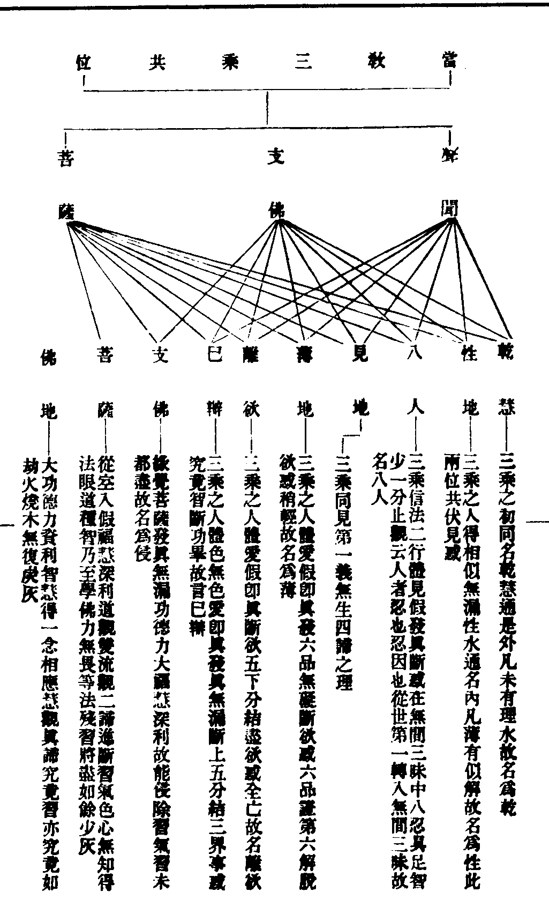
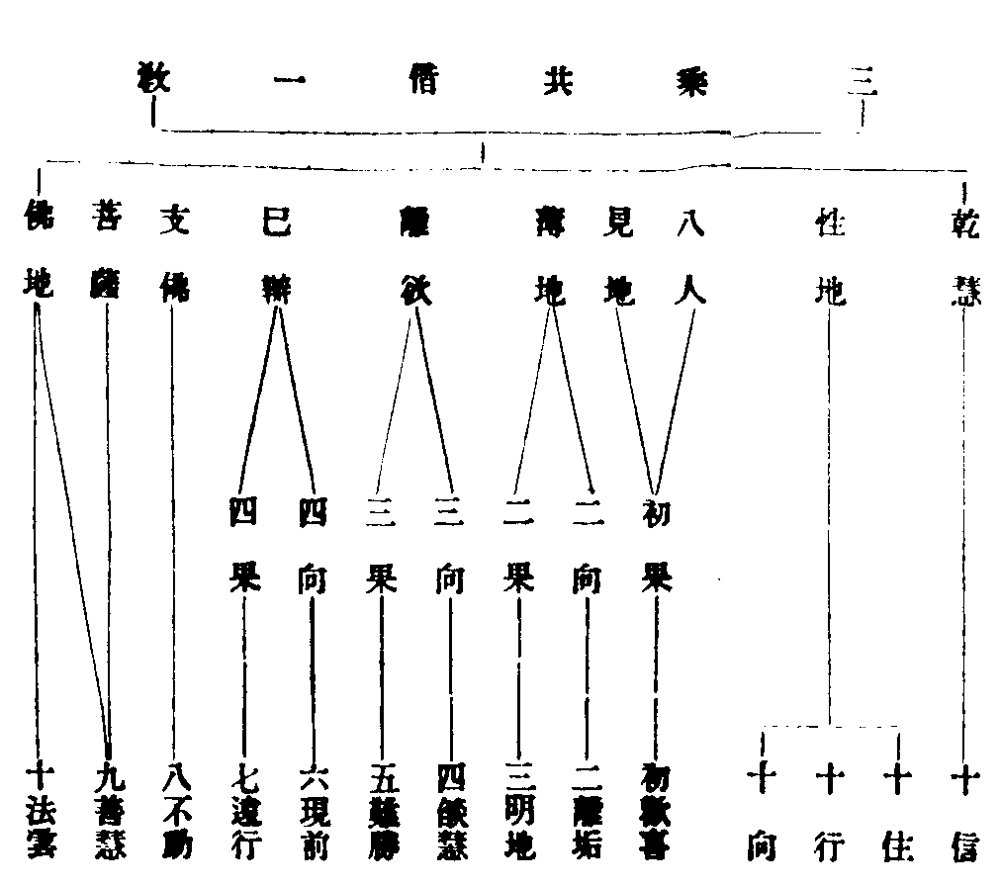
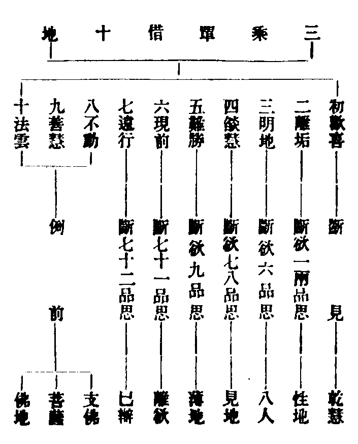
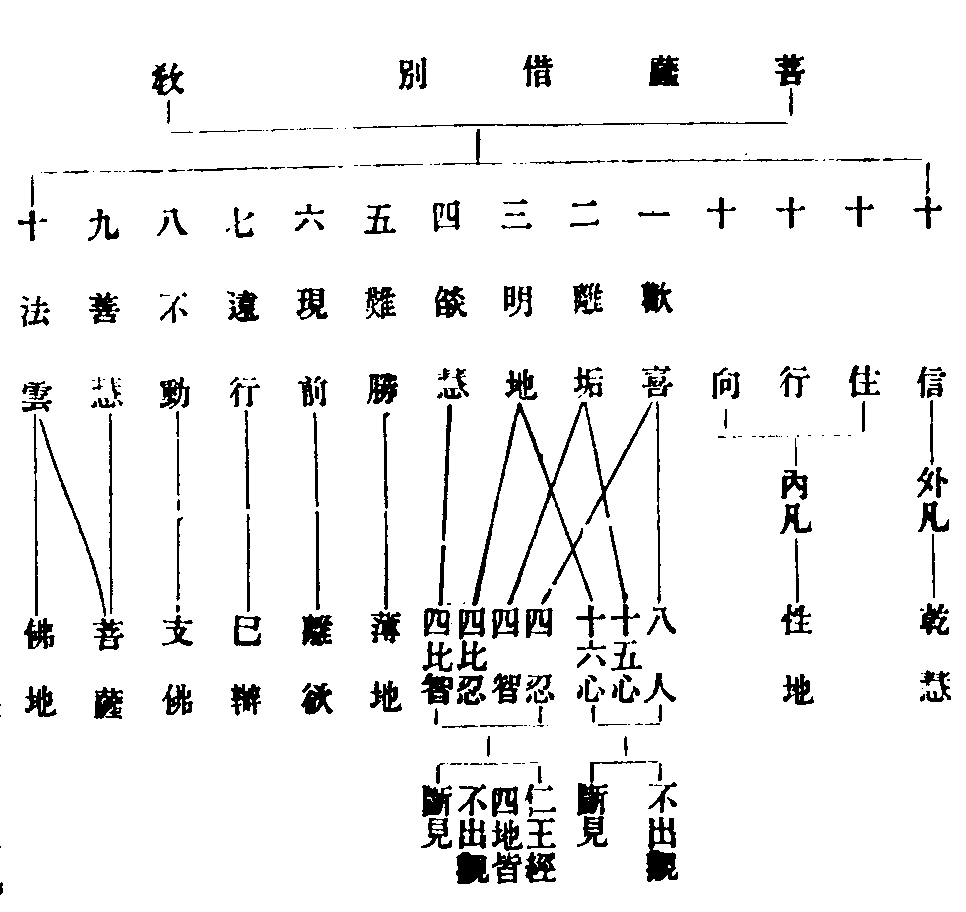
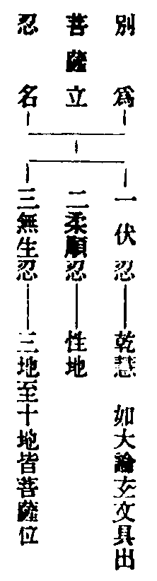

天台四教儀註彚補輔宏記卷七之上
△三菩薩二。初標人。
次明菩薩位者。
【□註】菩薩。具云菩提薩埵。摩訶薩埵。舊翻大道心眾生。亦大道成眾生。新譯云覺有情。以上求佛道。下化眾生故。此菩薩於當教內亦稱大乘。
【■記】此釋菩薩華梵名義也。初示具足梵語。次兩句出舊譯華言。舊翻大道心眾生者。如四教義云。菩提名道。薩埵名心。摩訶言大。是為大道心也。此似約自行翻名也。大道成眾生者。如智論云。菩提。翻佛道。薩埵。翻成眾生。摩訶。翻大。謂此人用諸佛之大道。以成就眾生也。此似約化他翻名也。舊譯者。指秦晉而言。諸經多言菩薩摩訶薩者。什師以天竺語繁。兩句八字標名。故略三存五。合兩為一。云菩薩摩訶薩也。次二句。釋新譯。然唐譯有三釋。一者。覺。即是菩提之道。有情。即緣慮之情。謂自能覺悟菩提之道。猶有緣慮之情。為對迷眾生故稱覺有情也。二者。覺。即是菩提之行。有情。乃博地眾生。謂此人不但自行諸佛菩提之道。又能開覺一切有情。所謂吾將以斯道。覺斯民。故名覺有情也。三者。覺即所求佛果菩提。有情。即所度大地眾生。謂此人上求佛覺。下化有情。自利利人。故云覺有情。是則約上求下化一義而釋也。又起信疏亦有三釋。一。約境。有所求所度。覺。即所求佛果菩提。有情。即所度大地眾生。謂此人以智上求佛覺。以悲下化有情。自利利人。故云覺有情。二約心。有覺悟之智。餘情慮之識。謂此人自能覺悟菩提之道。猶有緣慮之情。對全迷眾生。故稱覺有情。三。約能所。有能求所求。覺。即所求菩提之道。有情。即能求佛果之人。故稱覺有情。今則註云上求等者。乃約初義釋也。末句結成。言於當教內亦稱大乘者。謂此菩薩伏惑行因。望於後三。雖不名大乘。若對當教中下二乘。亦可稱為大乘也。
【□註】然此菩薩。全不斷惑。三祇百劫。伏惑行因。四教義三(六)云。三藏正化二乘。傍化菩薩。若說菩薩斷惑受生。二乘即疑。若結盡而得受生者。諸聲聞人得羅漢果。將不更受生耶。是故不說菩薩斷結受生也。(文)又妙玄五(十二)云。令生事善。故作是說。欲求佛者改惡從善。(文)又四教義三(二)云。雖修性念處。而不斷結。為生三界度眾生故。(文)由教不詮中道應本。故留結惑受生利物。故三藏菩薩不斷惑明矣(此乃立權則有)。
【■記】此明菩薩伏惑行因所以也。初略指藏教菩薩不斷所以。次四教義下。引證。文有四節。初為斷二乘疑。如四教義問云。佛於三藏。初開三乘。大乘最勝。何不以大乘為正。小乘為傍。答。鹿苑初轉四諦法輪。拘隣五人見諦成道。八萬諸天得法眼淨。但有得道之小乘。未有得道之大乘。故以小乘為正。大乘為傍也。二為逗機生善。如妙玄云。今明漸道之初。求佛當三阿僧祇劫修六度行。百劫種相好因。乃可得佛。欲令生事善。故作是說。事善者。即有相之善。如行六度。而不能達三輪體空。故名事善也。故作是說者。謂即藏教求佛果人。當須三祇修福。百劫種相。乃可得佛之說也。欲求佛者。改六蔽惡。從六度善。則知為人生善。故不說菩薩斷惑也。三重引四教義為受生利物。(文)云修性念處為壞屬愛魔業。破屬見一切智六師修共念處欲壞愛結。破神通六師。修緣念處。為一切愛見眾生說法。屬愛壞。故一切天魔眷屬壞。見壞。故十八種六師及一切外道眷屬壞也。故用三種念處。行六波羅密。意欲降伏天魔外道也。又菩薩用三種念處。行六度時。雖修性念處。而不斷結。為生三界。度眾生故。則知為受生利物。故不說菩薩斷結也。四約教及受生意。明不斷惑。蓋中道法身之理。乃起應之本。彼三藏教。既不詮顯。故於菩薩不論斷惑。又菩薩大悲憐憫。欲度一切受生死苦。教化眾生。眾生根熟。即便成道。說三乘教。共三乘人。同入涅槃。若因中斷結即不受生。豈能利物。故忍受生死。不斷結也。以是明之。則知不說菩薩斷結者。良有以也。原註。約權指明則有耳。
【□註】若大論云。聲聞人。言菩薩不斷使。乃至坐道場。然後斷者。是為大錯。又云。豈有菩薩。具足三毒能集佛法。(文)此蓋龍樹申通摩訶衍義。以大破小。故作此說。當彼鹿苑稟教之時。雖謂實歷三祇百劫。伏惑不斷。若方等般若轉入衍中。來至法華。會歸一實。定無始終三祗伏惑。故得大論約實斥權(此乃斥權則無)。
【■記】此言大論明菩薩無不斷惑之義。引論發明也。初句指聲聞言訛。次句指摩訶衍言錯。又云下。責詞。然是略引。若具記之。如文云。何以故。汝法中。說菩薩已滿三阿僧祇劫後。更有百劫中。常得宿命智。自憶迦葉佛時。作比丘。名鬱多羅。修行佛法。云何今六年苦行。修邪道法。日食一麻一麥。後身菩薩一日尚不應謬。何況六年。瞋習亦然。從久遠世時。作毒蛇。獵者生剝其皮。猶尚不瞋。云何最後身而瞋五人。以是知聲聞人受佛義亦錯。佛以方便欲破外道。故現六年苦行。汝言瞋五人者。是為方便。亦似瞋非瞋習也。又摩訶衍人言。得無生忍菩薩。一切煩惱及習都盡。亦是錯。若都盡與佛無異。亦不應受法性生身。以是故知菩薩得無生法忍。捨生身。得法性身。若言至坐道場一切煩惱及習俱斷。是語亦非。何以故。若菩薩具三毒者。云何能集無量佛法。譬如毒瓶。雖著甘露。皆不中食。菩薩集諸純淨功德。乃得作佛。若雜三毒。云何能具足清淨佛法是也。此蓋下。明論主破斥之意。如四教義問云。智論何意從始至終。一一彈破。答。龍樹為欲申通摩訶衍。明菩薩所行之道。以大破小。皆可破也。當彼下。轉明論意以實斥權。蓋阿含會上。但止保證真空。乃二乘所慕。而菩薩三祗修六度。百劫種相好。雖然歷劫伏惑修因。若至方等。受大聖之彈訶。般若。領二乘之轉教。則已轉入摩訶衍中。後來更至法華會上。聞三周說法。則三乘總是一乘。九界同歸佛界。豈有三祗百劫伏惑之事。是故論主得可以實斥權。以大破小也。末句原註指明約實斥權則無耳。
【□註】若釋迦果後權示利生。不妨自歷三祗百劫。故有尸棄然燈等事。今之所辨。且順立權義邊。故約鹿苑三藏。明不斷惑。如法華文句六(二十七)引阿含五佛子。釋更與作字名之為兒。四果支佛。名真佛子。菩薩不斷惑。子義未成(文)。
【■記】此以菩薩權示。明所辨也。謂我釋迦如來。因成久遠之實修果成久遠之實證。而有三祇百劫。伏惑行因。又有尸棄然燈。二佛授記等事。是皆如來果後權示利生之事。是故今文順權立義。以明三藏菩薩伏惑行因也。如法華下。引文句證菩薩不斷惑義。謂一往言之。凡夫為外子。二乘為庶子。菩薩為真子。玄文云。昔教五人得真無漏。名佛子。菩薩不發真。名外人。釋籤云。小乘以菩薩為似子。以聲聞為真子。是知子義未成。由不斷惑也。
【□註】妙樂七(十七)云。阿含至子義未成者。(疊疏引經)既阿含中亦明不斷惑菩薩。而大論斥權。非謂全無(此會經論明破立意。謂非但婆沙明不斷惑菩薩。而阿含亦明。此對婆沙而云亦也。以阿含會同婆沙而判大論。則知大論斥權云無。非謂全無。乃立權則有)。
【■記】此以經論判明。含有菩薩少分不斷惑也。原註正出其意。文有四段。初斷文意。二釋亦字。三正會判。四推論文含有也。言立權則有者。別行玄記云。為逗衍機。須破三藏。非是廢彼教而作是說也。
【□註】論云迦旃延造者。從所造論及所計者說。
【■記】此出大論斥權之意。言所造論者。即迦旃延所作發智經八乾度初品。是世間第一法。後諸弟子。為後人不能盡解八乾度。故作鞞婆沙也。
(此由上文阿含婆沙明不斷惑菩薩。則經論相符。而大論斥之者。蓋斥其執權之人耳。故曰論云迦旃延造者。從所造論及所計者說。即出其斥權之意。蓋從其所造論及所計故。大論謂是迦旃延造。是則大論斥其計論執權之非也)。
【■記】此段原註。釋妙樂出論斥權之意。初明論斥執權之人。蓋下。釋明大論斥權之意。是則下。結明論斥計執之非也。
【■備】此因判藏菩薩之便。辯明菩薩當分大小也。
【■補】此斥古師。如妙樂十車之難。古師所立菩薩之位。全同阿含十二年前。又法華會三歸一。古師不知。但言會二。講時但辨清會二二字。大意自明。
(此由他師不分大小菩薩之殊。及昧水牛白牛之異。謂法華會二乘。歸菩薩。故此破云。豈可會二乘斷惑之人還歸阿含不斷惑菩薩。若以會二乘還歸阿含。法華四十餘年之後。開顯之教。還復準舊十二年前阿含之教。故云一何可笑)。
【■記】此釋妙樂破古師謬說也。蓋以菩薩有大有小。若三藏中則小。而方等以後皆大也。故以水牛喻權小菩薩。白牛喻實大菩薩。而彼不知。謬謂法華會二乘歸菩薩也。
【□註】止觀三(十六)云。煩惱脂消者。名伏為消也。故別行下三云。但伏惑不斷。如無脂肥羊。取世智為般若。即此意也。
【■記】此會止觀煩惱脂消之意。先指文正釋。次引別行疏證成。如觀音記言。無脂肥羊者。大論言。此菩薩雖有上妙五欲。不生貪著。以有無常等觀故。譬如有王。有一大臣。自覆其罪。王欲罰罪。語臣言。若得無脂肥羊。少赦汝罪。大臣有智。以索繫羊。養以水草。日日三時。以狼怖之。羊雖得養。肥而無脂。以獻於王。王見問言。云何得爾。答以上事。菩薩亦爾。見無常空狼。令結使脂消。功德身肥也。是乃取世智為般若。即此以伏為消之意也。
【■補】取世智者。以未斷惑。真智不得現前。雖修六度。乃取有漏世智為般若。即此伏而不斷之意也。
【□註】又俱舍婆沙意云。下八地惑。初修禪時。先已斷竟。此有漏斷。亦是伏義(如輔行三下會釋云云)。
【■記】此會釋俱舍婆沙斷下八地惑也。蓋有漏智弱。雖然說斷。其實名伏。如輔行云。三十四心者。今取論意。與諸經論明斷少別。大論云。下地諸惑。因時未斷。至樹下時。乃以九地九品思惑。通名一九。故言三藏菩薩。位同凡夫。以九無礙九解脫。合為十八。見道中八忍八智。合為十六。并前共成三十四心。俱舍婆沙意云。下八地惑。修初禪時先已斷竟。唯非非想地九品見思全在。用九無礙九解脫。以根勝故。不復更修下八地定。不同聲聞。亦異緣覺。乃至云此與俱舍不同。什公翻譯。及龍樹意。俱舍應悞不同意者。今且以一意消通。今二論理齊。俱舍取修禪時已斷惑竟。不復更斷。智論依餘部。雖有漏斷。未名為斷。至菩提樹下。但斷非想。八地俱名無漏。但是從部得名不同。故使二論用義不等。
【□註】然不斷見思。還斷塵沙否。答。須知三祇百劫。亦但伏而不斷。故至樹王下斷見思時。於塵沙法上證四真諦。方斷塵沙也。
【■記】此料簡菩薩斷伏塵沙。問中承不斷見思而問斷塵沙者。蓋見思阻乎空寂。塵沙障乎化導。是則菩薩不斷見思則可。不斷塵沙則不可。故此問之。答中明修因時。伏而不斷。至成道時。與見思同斷。別行玄云。三十四心正習俱盡者。頓證羅漢。及以支佛。亦三十四心無間而得。但不以此頓盡正習。一言於習。有見思習。塵沙習。菩薩修學塵沙法門。治其劣慧。於一一門。用四諦觀。伏其正使。於一一門。行六度行。熏見思習。故樹王下。三十四心。於塵沙法上。證四真諦。故令正使。及二習氣。俱時而盡。故能二諦皆究竟也。方異二乘弟子。偏障佛眼佛智也。
【□註】若止觀三(十六)云。得法眼。照俗諦。(文)得相似法眼。有漏智照耳。
【■記】此釋止觀明菩薩法眼照俗也。先引文。次正釋。謂菩薩修因之時。所得法眼。雖非名字觀行。亦非分證究竟。但是相似法眼。於俗諦境上。只可依稀而見。彷彿而知。但是有漏智照。是故塵沙但言伏而非斷也。
△二明法二。初標。
從初發心。緣四諦境。發四弘願。修六度行。
【□註】生滅四諦。為所依境。弘者。大也。要制其心。志求滿足。名為誓願。
【■記】此釋所緣四諦境也。如前註云。苦則三相遷移。集則四心流動。滅則滅有還無。道則對治易奪。是名生滅四諦。此三藏菩薩依之而發弘願也。要。求也。世出世之願。無過此四。故謂之弘。願而加之以誓。所以堅其成也。
【□註】度者。越生死流。到彼岸也。誓若無境。名為狂願。不行六度。其願則虗。又此化他四門徧學。異乎二乘一門自行。
【■記】此明三乘廣狹。修行有異。謂菩薩乘人。心既廣大。故於有等四門一一遍學。不為自利。唯樂利人。而二乘之流。心既狹劣。行亦孤陋。但依空法。取證道果。唯求自度。不欲度人。自其所以有異乎此也。
【□註】又二乘雖無破戒。乃至愚癡。行非利生。不名六度。蓋奪而言之。
【■記】此明二乘。行非六度也。謂一往觀之。二乘競競守戒。似修戒度。乃至無愚痴行。似般若度。稱實言之。既是自私自利。而非利生行業。但名自行不名六度。六度者。度他六蔽也。是則與之則是。奪之則非也。
【□註】別對諦緣三祇百劫。名四階成道。
【■記】此對諦緣結名四階。謂聲聞人。修四諦行。緣覺人。修十二因緣行。菩薩人。修四階行。然此四階成道。名出楞伽。謂初僧祇。二僧祇。三僧祇。百劫種相好也。
△二釋二。初發願修行二。初發願。
一未度者。令度。即眾生無邊誓願度。此緣苦諦境。二未解者。令解。即煩惱無數誓願斷。此緣集諦境。三未安者。令安。即法門無量誓願學。此緣道諦境。四未得涅槃者。令得涅槃。即佛道無上誓願成。此緣滅諦境。
【□註】四教義三初云。一未度者令度。即是度天魔外道。愛見二種六道眾生。未度三界火宅之苦諦。令得度也。二未解者令解。即是愛見二種眾生。未解愛見二十五有業。令得解也。三未安者令安。即是愛見二種眾生。未安三十七品一切諸道。令安道諦也。四未得涅槃者令得涅槃。即是愛見二種眾生。未滅二十五有生死因果。皆令得滅諦涅槃也。
【■記】以上如文可知。
△二修行二。初結前生後。
既已發心。須行行填願。
【□註】觀音玄記上(七)云。若非行山。莫填願海(文)。
【■記】此釋以行填願。蓋由觀音玄義云。欲滿此願。必須修行。修行不出福慧。慧即般若。福即五度。互於資導。以行順願。事理圓足。故記云。若非行山。莫填願海。行即福慧。義當六度。五資於慧。慧導於五。其猶目足。不可互缺。五除事障。慧除理障。此二功圓。悟理得事矣。
△二正明修行二。初總標。
於三阿僧祗劫。修六度行。百劫種相好。
【■補】修六度行者。行施。乃盡命傾財。持戒。則防遮護性。忍辱。則就刀割水。精進。則如救頭然。禪那。乃四儀湛寂。智慧。則一念圓明。大願之心普被。有作之道徧施。度生死流。登涅槃岸。故曰六度。第一名施度。梵語檀那。秦言徧施。若內有信心。外有福田。有財物。三事和合。心生捨法。能破慳貪。是為檀那。布施有二。一。財施。謂飲食衣服。田宅六畜。奴婢珍寶。一切己之所有資生之具。以及妻子。乃至身命。悉屬他有。為他財物。故云猶屬財施。有所須者。能施與之。皆名財施也。二。法施。若從諸佛菩薩經論。及善知識。聞說世出世法。以清淨心。為人演說。皆名法施也。第二名戒度。梵語尸羅。此云戒。戒以防非止惡為義。謂能防惡律儀無作之非。止三業所起之惡也。大論云。云何為戒。若惡止更不作。若心生。若口言。若從他受。息身口惡。是為戒。又戒。訓警也。謂警策三業。遠離過非也。又戒名為制。能制一切不善法故。第三名忍辱。梵語羼提。此云忍辱。謂內心能安。忍外所辱之境。故名忍辱。忍辱有二。一生忍。二法忍。生忍復二。一。於恭敬供養中。能忍不着。則不生憍逸也。二。於罵詈打害中能忍。則不生瞋恨怨惱也。二。法忍亦二。一者非心法。謂寒熱風雨飢渴老病死等。二者心法。謂瞋恚憂愁。淫欲憍慢。諸邪見等。菩薩於此二法。皆能忍而不動。是名生法忍也。第四名精進。梵名毗梨耶。此云精進。欲樂勤行善法。不自放逸。謂之精進。精進有二。一身精進。若身勤修善法。行道禮拜。講說勸助開化等。名身精進。二心精進。勤修忍辱禪定智慧等。是名心精進。大集經佛言。精進有二種。一始發精進。二終成精進。菩薩以始發精進。習成一切善法。以終成精進。分別一切法不得自性也。第五名禪度。梵名禪那。此言靜慮。禪亦有二種。一世間禪。謂根本四禪。四無量心。四無色定等。是名凡夫所行禪。二出世間禪復二。一出世間禪者。謂六妙門。十六特勝。觀練熏修等。二出世間上上禪。謂自性等九種大禪。今是事禪。非出世間上上禪也。第六名智度。梵語般若。此云智慧。三藏菩薩所有智慧。惟照生滅偏空之理也。
【□註】輔行三下初云。阿僧祗。此翻無數。劫。翻時。
【■記】此釋阿僧祗華梵名目也。梵語僧祗。秦言數。阿者。秦言無。問。幾時名阿僧祗。答。大論云。天人中能知算數者。極數不能知。名一阿僧祗。如十千名萬。十萬名億。千萬億名那由他。千萬那由他名頻婆。千萬頻婆名迦他。過迦他。名阿僧祗。或翻阿僧企耶。此云無央數。央。盡也。劫翻時者。大論言劫波。秦言分別時節。西域記云。時極短者。謂剎那。百二十剎那。為一呾剎那。六十呾剎那。為一臘縛。三十臘縛。為一牟呼栗多。五十牟呼栗多。為一時。二六時合成一日一夜。(云云)俱舍言。時之極少名剎那。時之極長名為刧。
【□註】俱舍云。八十中大劫。(謂一增一減為一小劫二十增減為一中劫。今此一增一減亦名中劫。如劫章。其小劫名。自有十種當詳)大劫三無數。謂六十數中第五十二數。名阿僧祇。謂積此大劫成無數時。故云三阿僧祗(文)。
【■記】此釋三阿僧祇數。乃至名三阿僧祇也。若此方數法。秪有十等。如黃帝算經云。億。兆。京。姊。姟。壤。溝。澗。正。載。風俗通云。千生萬。萬生億。乃至正生載。載地不能載也。億分四等。一以十萬為億。二以百萬為億。三以千萬為億。四以萬萬為億。縱至于載。猶可數而知。唯佛法中第五十二數。非心力能及。方名無數也。然六十數中。阿僧祇是五十二數。于六十忘失餘八。故但出五十二名耳。大中小劫。解見前三卷中。今以一增一減名中劫者。乃依劫章中義也。十種小劫名。詳法數云。一時。二年。三月。四半月。五日。六夜。七剎那。八怛剎那。九臘縛。十目呼剌多。是也。大劫三無數者。論釋云。劫性是何。謂唯五蘊經說。三劫阿僧祇耶精進修行。方得成佛。於前所說四種劫中。積何劫。成三劫無數。累前大劫為十百千。乃至積成三劫無數也。今註謂六十數中第五十二名阿僧祇者。翻譯名義中詳載。
【□註】俱舍問云。既積無數。何復言三。答。非無數言。顯不可數(文)。
【■記】論云。解脫經言。六十數中。阿僧祇耶是其一數。云何六十。如彼經言。有一而無餘。數始為一。十一為十。十十為百。十百為千。十千為萬。十萬為洛叉。乃至大跋羅欃為阿僧祇耶。于此六十數忘失餘八。若數大劫至此數中阿僧祇耶。名劫無數。此劫無數復積至三。經中說為三劫無數。非諸算計所能數知。故得說為三劫無數也。
【□註】諸經更有拂石劫。芥子劫。具如輔行一上六紙。
【■記】輔行引金光明經言。梵天三銖天衣。三年一拂。拂盡畟方四十里石。以為小劫。八十里盡。以為中劫。百二十里盡。以為大劫。不於如此劫修學。不名菩薩。又云。有一里劫。二里劫。乃至萬里劫。又云有大方城。周四十里。滿中芥子。百年取一芥。芥盡名為劫。經劫無數。名阿僧祇。畟。音出。利也。
【□註】若大乘亦有一百零三數(如華嚴)。
【■記】唐譯華嚴阿僧祇品。心王菩薩問佛。云何阿僧祗。乃至不可說不可說。佛言。一百洛叉。為一俱胝。俱胝俱胝。為一阿庾多。乃至言不可說轉不可說轉。為一不可說不可說。此又不可說不可說。為一不可說不可說轉。共有一百二十三數是也。若刊定記破經文。此又二字為長。而清涼師則開此又二字贊一不可說不可說。共有四不可說。而據刊定記。唯一百二十三數。據清涼疏。則有一百二十四數也。
△二釋相三。初三祇行因列數二。初總標。
言三阿(無)僧祇(數)劫(時)者。
此句儀文標徵可知。
△二示相三。初初祇行行。
且約釋迦修菩薩道時論分限者。從古釋迦至尸棄佛。值七萬五千佛。名初阿僧祇。從此常離女身。及四惡趣。常修六度。然自不知當作佛。若望聲聞位。即五停心。總別念處(外凡)。
【□註】輔行六上(十三)云。彼婆沙中。釋菩薩義。明因。則指釋迦三祇百劫。明果。則指彌勒當成。何故爾耶。釋迦果已成。是故指因行。為令慕果而行因故。彌勒因已滿。是故指當果。皆使觀因以知果故。故諸聖教。並明釋迦之因。如說菩薩昔苦行等。並明彌勒之果。如說彌勒下生經等。(文)從古釋迦等者。發軫鈔云。釋迦。翻能仁。牟尼。翻寂默。能仁是姓。寂默是字。姓從慈悲利物。字取智慧冥理。以利物故。不住涅槃。以冥理故。不住生死(文)。
【■記】此釋今佛修因。古佛姓字。發軫鈔。乃吳興所撰。以釋金剛疏之書也。鈔云。釋迦翻能仁。準本起經。牟尼翻寂默。準本行經。能仁是姓者。長阿含云。昔有輪王。姓甘蔗氏。聽次妃讚。擯四太子。至雪山北。自立城居。以德歸人。鬱為強國。父王悔召。太子辭過不還。父王三歎。我子釋迦。因此命氏也。寂默是字者。本行經云。又諸釋種。性憍多言。及見太子。悉皆默然。王言。宜字牟尼也。從古釋迦者。婆沙云。過去久遠。人壽百歲。有佛出世。名釋迦牟尼。剎帝利姓。釋種眾生。母名摩耶。父名淨飯。子名羅睺羅。侍者。弟子。出五濁時。皆如今佛。時彼世尊。化導有情。恒涉道路。為風所傷。肩背有疾。令阿難陀。往陶師家。求胡麻油。及以煖水。為吾塗洗。時彼侍者。至陶師家。廣贊佛德。求索油水。彼陶師者。名曰廣識。辦胡麻油。及以香水。為佛灌洗。風疾除愈。佛為說法。彼聞歡喜。即發願言。願我未來作佛。名號弟子眷屬時處。如今世尊等無有異。彼陶師者。即今釋迦。從古釋迦而發心也。
【□註】尸棄。此云寶髻。非七佛中第二尸棄也。緣載四教義三初。并大論第三(文)。
【■記】翻譯名義云。罽那尸棄。名出俱舍。大論名剌那尸棄。此翻寶髻。亦云寶頂。吾佛世尊。初僧祇滿時。值此佛。與七佛中第二尸棄。隔二僧祇。先達謂同。故今辨異也。所言七佛者。賢劫之前九十一劫初。有佛名毗婆尸。第三十一劫有二佛。一名尸棄。此云大。二名鞞恕婆。附是賢劫中有四佛。一名鳩飱陀。二名迦那伽牟尼。三名迦葉。四名釋迦牟尼。
【□註】從此常離女身者。妙玄四(二十七)釋籤三(十五)四教義三(二)云。第三僧祇。始離五障。一惡道。二貧賤。三女身。四形殘。五喜忘。方乃不墮。如戒疏上三云。初僧祇得五種功德。一生人天。二生富貴。三男身。四根具。五知宿命。舊云初僧祇有遇緣不遇緣異。不遇違緣。即離五障。如戒疏。若遇違緣。至第三祇方離。如釋籤。又初僧祇離障。且約功能。三祇方離。乃據定位。
【■記】妙玄云。此菩薩從初發菩提心。起慈悲誓願。觀察四諦。以道諦為初門。行六波羅密。從初釋迦。至罽那尸棄佛時。名第一阿僧祇。常離女身。釋籤科但曰於中分凡聖位。四教義云。從過去釋迦至尸棄佛。名一阿僧祇劫。從此常離女身。爾時不知當作佛不作佛。此初阿僧祇劫。即是得五停心別總相念之位。用性念處。共念處。緣念處。行六度。乃至云是初僧祇劫。修行六度。用四弘誓。安撫生死眾生。心無怯弱。故壞女人之業。常受丈夫之身。爾時未發煖解。位在外凡。戒疏云。初僧祇得五種功德。一不生惡道。二不生邊地。三諸根完具。四不受女身。五常識宿命也。已上所記。皆據方冊明文而註出。四教義等說第三僧祇始離五障者。或依舊本亦未可知。又指釋戒疏五種功德。與今所記前後辭異。然意是同也。舊云下。出舊會釋。又下。今註文會釋。
【■補】問。上引戒疏云。初僧祇得五種功德。何故此又言離障。答。以離障即得功德故。如大論云。若離五法。得五法。是名菩薩。何謂五法。離三惡道。常生天上人間。離貧窮下賤。常得尊貴。離非男法。常得男子之身。離諸形殘醜陋。常得諸根具足。離喜捨忘。常憶宿命。得是宿命智慧。常離一切惡法。遠捨惡人。常求道法。攝取弟子。如是名為菩薩是也。離喜捨忘。謂離妄想分別。有了記心。而能知宿命也。
【■備】節義云。從此常離女身下。應言妙玄四教義勾斷。釋籤三應移在下。蓋釋五障文。原在釋籤三故。
【□註】又文句二(十二)云。不生三惡道。位不退。不生邊地。諸根完具。不受女身。即行不退。常識宿命。不起妄想分別。攀緣諸境。即念不退。(文)妙樂二(二十一)云。第三祇時。橫得三不退故(文)。
【■記】此以五種功德。配三不退。乃至通是三不退也。文句云。約位行念論不退。應四句分別。不生三惡道。位不退。不生邊地。諸根完具。不受女身。即行不退。常識宿命。即念不退。具此名不退地三藏義也。妙樂云。第三祇。橫得三不退。故離五障時。三義俱得。即是第三僧祇通至百劫。通是三不退也。至此名為上忍故。今但取藏教初祇五功德。配三不退。
【□註】成論以念處為位不退。煖頂為行不退。忍為念不退。數論以下中上忍為三不退。淨名疏以煖頂忍為三不退。各隨義對也。
【■記】此明諸文。賢位對三不退。可知。
【□註】然自不知作佛。四教義三(二)云。爾時未發煖解。位在外凡。故不自知己身當作佛不作佛。
【■記】妙玄亦言。準望二乘。位在五停心別總相念處位中。故不自知當作佛也。
△二二祇行行。
次從尸棄至然燈佛。值七萬六千佛。名第二阿僧祇。此時用七莖蓮華供養。布髮掩泥。得授記莂。號釋迦文。爾時自知作佛。口未能說。若望聲聞位。即煖位。
【□註】梵語提洹竭。此云然燈。大論云。太子生時。一切身邊。光如燈故。故云然燈。以至成佛。亦名然燈。(文)瑞應翻為錠光。
【■記】大論如文。瑞應下。示別翻。有足曰錠。無足曰燈。故瑞應經翻為錠光。摭華言。錠。音定。燈屬也。古來翻譯。回文不同。語異義同。故須從金。
【□註】七莖華等者。初儒童為五百道士講論。得銀錢五百。後問王家女。名瞿夷。買得五華。并女寄二華。供養於佛。故云七莖。諸文但云摩納五華奉散也。如集解瑞應經。
【■補】因果經言。過去無數阿僧祗劫。有仙名善惠。時燈照王太子普光。啟父出家。成菩薩道。善惠初為五百外道講論道義。各以銀錢上之。當往普光佛所。欲施供養。見王家青衣。持七莖青蓮華過。問言。此華賣否。答言。當送宮內。願以上佛。善惠請以五百銀錢。雇五莖華供佛。青衣從命。并寄二華。以獻於佛。願我後來。常為君妻。時王及臣。禮佛散華。悉墮於地。善惠五華。皆住空中。化成金臺。後散二華。住佛二邊。佛讚言善惠。汝過阿僧祇劫。當得成佛。號釋迦牟尼。善惠見地濁濕。心自念言。云何令千輻輪足蹈此而過。即脫鹿皮衣以用布施。不足掩泥。又解髮以覆之。如來踐已。因記之曰。汝後得佛。當於五濁惡世。度諸天人。時善惠求佛出家。佛言。善來比丘。鬚髮自落。袈裟著身。即成沙門。善惠命終之後。上生為四天王。下生為轉輪王。乃至上生第七為梵王。各三十六返。或為外道六師。婆羅門小王。各盡其壽。不可稱數。時善惠者。即我身是。青衣女者。即耶輸陀羅是也。
【□註】布髮掩泥。稽首佛足。見地濯濕。即解皮衣。欲以覆之。不足掩泥。乃解髮布地。令佛蹈而過。(文)得受記莂等。瑞應經云。佛因記言。汝自是後。九十一劫。劫號為賢。汝當作佛。號釋迦文。菩薩已得訣言。疑解望止。[火*霍]然無想。寂而入定。便逮清淨。不起法忍(文)。
【■記】禪書云。世尊因地。布髮掩泥獻華于然燈佛。佛見布髮處遂約退眾。乃指地云。此一方地。當建一梵剎竟。時諸天散華相贊。是則布髮掩泥一行。最為希有供養也。瑞應經云。菩薩散五華。止空中。當佛上。散瞿夷所寄二華。挾佛肩上。佛知至意。贊言。汝無數劫。所學清淨心。棄命捨欲。守空不起。不滅無猗之慈。積德行願。今得之矣。因記云云。然劫號賢者。大悲經言。佛問阿難。何故名為賢劫。阿難。此三千大千世界。劫欲成時。盡為一水。淨居天子。見此世界。唯一大水。見有千枝諸妙蓮華。一一蓮華各有千葉。甚可愛樂。天子見華。心生歡喜。踴躍無量。而皆贊言。奇哉希有。奇哉希有。如此劫中。當有千佛出世。以是因緣。遂名為賢。是則然燈預記劫號良可驗也。佛號釋迦文者。淨名疏云。天竺語釋迦為能。文為儒。義名能儒。
【□註】妙玄七(十一)既云斷惑。故知通佛行因之相也。釋籤八(三)云。然燈授記。得無生忍。故知是通佛行因也(文)。
【■記】此釋明不起法忍。決非藏教佛果行因之相明矣。妙玄明四教佛果行因之相云。迹因多種。或言昔為陶師。值先釋迦佛。三事供養。藉草。然燈。石蜜漿。發口得記。父母名字。弟子侍人。皆如先佛。是初僧祇發心。既不明斷惑。知是三藏行因之相也。或言昔為摩納。值然燈佛。五華奉散。布髮掩泥。躍身虗空。得無生忍。佛與授記。號釋迦文。大品亦言。華嚴城內得託。義與此同。並言斷惑。故知通佛行因之相也。或言昔為寶海梵志。刪提嵐國。寶藏佛所。行大精進。於十方佛。送華供養。既為寶藏佛父。又是彌陀之師。稱其功德。不可思議。具在悲華經中。知是別圓行因之相也。今但明得忍。乃知是通佛行因之相無疑。問。瑞應經明摩納獻華。然燈。諸文引此證二僧祇。何故妙玄證通佛行因耶。答。經中既言得不起法忍。三藏由伏惑故。無此法忍。故證通佛。而諸文證二僧祇者。以瑞應是三藏經故。淨名疏以初祇為伏。二三祇為順。百劫為無生。三十四心為寂滅。故諸文中證二僧祇也。
【□註】發軫鈔據此。瑞應經屬方等攝。若明降生之相。蓋約三藏境本而言。
【■記】此節與上節皆帶辨藏通教相發軫。問言。若通別圓。妙玄何故判為通教。答。非但通二。亦通三藏。隨教所說。淺深不同。一往。瑞應多屬通義。以得忍故。異前三藏。不說行因不思議相。異後別圓。況復若判屬通。必兼後二。又言。餘經說遇然燈是八地。正是通教支佛地也。明降生之相者。瑞應言。自夫人懷妊。天為獻飲食。自然日至。夫人得而享之。不知所從來。不復王厨以為苦而且辛。到四月八日夜。明星出時。化從右脅生。墮地。即行七步。舉右手柱而言曰。天上天下。唯吾獨尊。三界皆苦。無可樂者。則知就三藏境本而言也。
【□註】此時自知等者。戒疏上(三)云。爾時雖自知作佛。而口不說。準位。在煖法性地。既有證法之信。必知作佛。修行六度。心未分明。口不向他說也(文)。
【■記】四教義云。爾時菩薩。雖能自知我必作佛。口不稱說。謂此是用煖法智慧。修六度也。何者。因總相四念處初。所得善有漏五陰。即是性地順忍初心之位。既有證法之信。故必知作佛。而用煖解法修行六度。心未分明。不向他說也。
【■備】集註問答云。藏加行。與通性地齊。煖在加行首。故約藏通對言耳。
△三三祇行行。
次從然燈佛。至毗婆尸佛。七萬七千佛。名第三阿僧祇滿。此時自知。亦向人說。必當作佛。自他不疑。若望聲聞位。即頂位。
【□註】毗婆尸。翻勝觀。亦云徧見。
【■記】華嚴疏云。此翻有四。淨觀。勝觀。勝見。徧見。如月圓智滿。是徧見也。魄盡惑亡。是淨觀也。既圓且淨。是勝觀勝見也。名義云。毗婆尸。亦名維衛。此云勝觀。此由釋尊於毗婆尸佛初種相好。故為七佛之首。以贊弗沙精進力故。超九大劫。故至於今。過九十一大劫也。
【■補】七佛首之毗婆尸。居莊嚴劫末。只隔一劫。何有九十一劫。以義推之。應非七佛中也。準尸棄佛可知。
【■記】此明戒經中三祇行滿不同。戒經第一修三十二相業品。佛為善生言。善男子。我於往昔寶頂佛所。滿第一阿僧祇。然燈佛所。滿第二阿僧祇。迦葉佛所。滿第三阿僧祇。當知此文隨機說耳。
【■補】統紀云。按戒經佛言。我於釋迦最初發心。於迦葉佛滿三僧祇。竊詳三祇滿時。正在毗婆尸。今言迦葉者。兼百劫種相好言耳。
【□註】此三祇等義。並出大論。俱舍婆沙。
【■記】大論言。從過去釋迦文佛。到罽那尸棄佛。為初阿僧祇。至然燈佛。為二阿僧祗。至毗婆尸佛。為三阿僧祇。是中菩薩種三十二相業因緣也。俱舍云。第一僧祇滿。值寶髻佛。第二滿。值然燈佛。第三滿。值勝觀佛。是知大論名罽那尸棄毗婆尸者。或彼此音異也。
【□註】此時自知等者。戒疏上(三)云。是時內心了了。自知作佛。口自發言。準望位。在頂法位中。修行六度。四諦解明。如登山頂。了見四方。故口向他說(文)。
【■記】四教義云。是時菩薩內心了了。自知作佛。口自發言。無所畏難。我於來世。當得作佛。今謂此是頂法之位。行六度四諦。觀解分明。如登山頂。四顧分明。了了自知作佛。亦向他人說也。
【□註】觀音玄記下四云。聲聞但於一境一門修念處等。故易成就。菩薩徧於一切境界。一一四門。復加六度。久遠熏修。使一一行。攝諸眾生。令種熟脫。故三祇內。凡化幾人。超凡入聖。自身此岸。度人彼岸。故經長劫。證位猶下(文)。
【■記】此釋望聲聞頂位也。然此所引記文。乃是答辭。以前有問言。聲聞根鈍。尚能速入七賢四聖。菩薩智利。何故三祇猶居頂法。故今引聲聞但於一境一門等之答辭。以明菩薩望聲聞位頂法位也。
△二百劫種相好因二。初結前生後。
【□註】輔行三下(三)云。過三祇已。百福種相。種即修也。於欲界。人中。南洲。男身。佛出世時。能種相業也。前後不拘(文)。
【■記】四教義問。菩薩幾時種三十二相。答。極疾九十一劫。極遲百劫也。而言於欲界人中等者。乃就迦旃延小乘而論也。大論述其問云。三十二相業。向何處可種。答。欲界中種。非色無色界。於欲界五道中。在人道。於四洲中。在南洲。於人道中。在男身。於時中。在佛出世時種。何以故。緣佛身得種故。又問。於三業中。何業種。答。意業種。何以故。意業利故。意業有六識。何識種。答。意識種。何以故。五識不得分別故。前後不拘者。大論言何相初種。答。有言足下安立相先種。何以故。先安立。前後能種餘相故。有言紺青眼相初種。得此眼相。以大悲觀察眾生故。今謂。雖有此語。不必爾也。若相因緣和合時。便是初種也。
【■補】色界耽樂。無色住定。故不能種。欲界苦多樂少。能發大心。修行六度。餘三洲福報最勝。唯南洲福壽俱微。善心易發。聖人化導。必生南洲。女人多障無智。故須男身。若非佛世。則無所緣。故佛出世時。能種相業也。
【□註】百福成一相者。四教義三(二)云。修行六度。成百福德。用百福德成一相。以為三十二相之業因也(文)。
【■記】此釋百福成相。乃相好之因緣也。大論云。復次有人布施。是三十二相之因緣。所以者何。施時與心堅固。得足下安立相。施時五事圍繞。受者是眷屬業因緣故。得足下輪相。大勇猛力施故。得足跟廣平相。施攝人故。得足下縵網相。美味飲食施故。得手足柔軟七處滿相。施以益命故。得長指身不曲大直相。施時言我當相與。施心轉增故。得足趺高毛上向相。施時受者求之。一心好聽。殷勤約敕。令必疾得故。得伊泥延膊相。不瞋不輕求者故。得臂長過膝相。如求者意。施不待言故。得陰藏相。好衣服臥具金銀珍寶施故。得金色身相。薄皮相。布施時。適可前人意。起自在業因緣故。得一一孔一毛生眉間白毫相。乞者求之。即言當與。以是業故。得上身如師子肩圓相。病者施藥。飢渴者與飲食。起少病業因緣故。得兩腋下滿相。最上味相。施時勸人行施而安慰之。開布施道故。得肉髻相。身圓如泥拘盧相。有乞求者。意欲與時。柔軟實語。必與不虗故。得廣長舌相。梵音聲相。如迦陵頻伽鳥聲相。施時如實語。利益語故。得師子頰相。施時供養受者。心清淨故。得牙白齒齊相。施時實語。和合語故。得齒密相。四十齒相。施時不瞋不著。等心視彼故。得青眼相。眼睫如牛王相。是為種三十二相因緣也。然大論唯言布施。約意通六。以檀度能攝五度故。所謂檀義攝於六。資生無畏法。此中一二三。是名修行住。是也。問。何謂修六度。成百福。答。瑜伽論云。一少分離殺。乃至邪見為一福。二多分離殺等。三。全分離殺等。四。少時離。五。多時離。六。盡壽離。七。自離。八。教人離。九。以無量稱揚讚歎述離。十。見離殺等深心慶悅。大生歡喜。十門各十。總說為百福行。華嚴鈔言。少分者。經部許有分受。或多或全。由彼根生有劣中上差別。及時有多時少時等。少時從一日至十日。多時謂一年乃至命終。然其十種。分為四類。初三十據事以分。次三十依時有別。次二十約自他明。後二十約贊說立。正約行時。名為百行。約所生福。名為百福。依百福成一相也。
△二別示福相。
福義多途。難可定判。有云大千盲人治差。為一福等。
【□註】福義多途等者。輔行三下(三)云。問幾許為一福。乃至菩薩修十善各有五心。謂下。中。上。上。上上中上。初發五心。乃至具足五心。如是百心。名為百福成於一相。如是至三十二。名身清淨(文)。
【■記】此釋福義。然據文。是指廣示別。而註釋意。又似通明福量。今且福義多途者。大論問。幾許名一福德。答。有言業報轉輪聖王。於四天下受樂自在。名一福德。如是百福成一相。有言作釋提桓因。於二天中得自在。名一福德。有言作他化自在天王。於欲界中得自在。名為一福。有言除補處菩薩。餘一切眾生所得福報。是名一福。有言天地劫盡。一切眾生共福德故。三千大千世界報立。是名一福。有言是福不可量。不可以譬喻知。如三千大千世界。一切眾生皆盲無目。有人能治令差。是為一福。一切人皆被毒藥。一人能治令差。一切人應死。一人能救令脫。一切人破戒破正見。一人能教令得淨戒正見。如是等俱為一福。復有人言。是福不可量。不可以譬喻。是菩薩入第三阿僧祇中。心思大行。種是三十二相因緣。故知是福無能量。唯佛能知也。是為福義多途難可定判也。今儀文但舉一種而已。而註云。乃至修十善。名有五心等。通以百心。釋百福義。乃準大經高貴德王品云。菩薩修清淨身者。菩薩修不殺戒。有五種心。謂下。中。上。上上。上中上。乃至正見亦如是。是五十心。名初發心具足。決定成五十心。是名滿足。如是百心。名百福德。具是百福。成於一相。如是展轉具足。成就三十二相。名清淨身也。又此百心。即是百思。謂菩薩先以五十思治身。謂修十善各五思。成五十思。後心復起五十思。令圓成百福。五思者。婆沙云。離殺思。勸導思。讚善思。隨喜思。迴向思也。
【□註】觀音玄下(二)云。凡用三千二百福。修成三十二大人相。現時。方稱菩薩摩訶薩。
【■記】三千二百福。即累上百福。而成因性。三十二相。即所成果相。大論第四問。轉輪聖王有三十二相。菩薩亦有三十二相。有何差別。答。菩薩相者。有七事勝轉輪聖王。一淨好。二分明。三不失處。四具足。五深入。六隨智慧行。不隨世間。七隨遠離。輪王相不爾。又問。菩薩何以三十二相。不多不少。答。有言佛以三十二相莊嚴身者。端正不亂故。若少。身不端正。若多。佛身相亂。是三十二相端正不亂。不可益。不可減。猶如佛法。不可增減。身相亦如是。又問。菩薩何故。以身相嚴身。答。有人見佛身相。得清淨信。是故以相嚴身。復次諸佛以一切事勝。故身色。威力。種相。家屬。智慧。禪定。解脫。眾事皆勝。若佛不莊嚴身相。是事便少。有言阿耨菩提住是身中。若身相不端嚴。阿耨菩提不住此身中。是故菩薩修三十二相自莊嚴身。為得阿耨菩提也。問。佛智慧無量。身相亦應無量。何以止同轉輪聖王三十二相耶。答。不多不少。義如前說。復有人言。佛菩薩相不定。如說隨眾生所好。可以引導其心者。故為現相。若眾生不貴金而貴餘色。琉璃玻瓈金剛等。如此土世人者。佛則不現金色。觀其所好。則為現色。若眾生不貴纖長指。及網縵。以長指利爪。為羅剎相。以網縵為水鳥相。造事不便。如著手衣。何用是為。如罽賓國彌帝隷力利菩薩。手有網縵。父惡以為怪。以刀割之。言我子何緣如鳥。有不好肩圓。以為似腫。有以腹不現。無腹如餓鬼。有以青眼為不好。但好黑白分明。是故佛隨眾生所好。而為現相。如是等無有常定。有言此三十二相。實定以神通力。變化身。隨眾所好。而為現相。有言。佛有時神通變化。有時隨世界處生。當生處不得言神通變化。又於三千大千世界中。隨可度眾生處生。則為現相。如密迹經說。或現金色。或現銀色。或現日月星宿色。或長或短。隨可引導眾生。則為現相。如人相中說。五處長為好。謂眼鼻舌臂指髀手足相。若輪若蓮華。若貝。若日月。是故佛手足有千輻輪。纖長指。鼻高好。舌廣長而薄。如是等皆勝於先所貴者。令起恭敬心。有國土佛為現千萬相。或無量阿僧祇相。或五六三四。隨天竺所好。故現三十二相。八十種好也。
△三特示六度滿相二。初總牒。
修行六度。各有滿時。
【□註】六度滿文。在種相後者。蓋種相時。亦修六度也。
△二示相。
如尸毗王代鴿檀滿。普明王捨國尸滿。羼提仙人為歌利王割截無恨忍滿。大施太子抒海。并七日翹足讚弗沙佛進滿。尚闍黎鵲巢頂上禪滿。劬嬪大臣分閻浮提七分息諍智滿。望初聲聞位。是下忍位。
【□註】觀音玄記下(三)云。割截身肉。就鷹貿鴿。至盡一身。不惱不沒。自誓真實。感身平復。是檀滿相。尸毗翻與。檀。翻施。
【■記】釋迦因地作王。名尸毗。得歸命救護陀羅尼。視諸眾生。如母愛子。是時天帝。知命將終。求佛問疑。徧求不得。却還天宮。愁憂苦惱。時天巧師。名毗首羯磨。問天主言。何以悲惱。答言。我求一切智人。而不能得。毗首言。有大菩薩。滿足六度。不久成佛。天主以偈答曰。菩薩發大心。魚子菴羅華。三事因中多。及其結果少。汝作鴿。我作鷹。汝便詐怖。入王腋下。當往試之。是菩薩否。毗首言。是大菩薩。云何以是事惱之。帝釋言。我無惡心。如金須試。即如所說。變入王腋。舉身戰懼。動目作聲。眾人言。是王大仁慈。一切宜救護。如是鴿小鳥。歸之如入舍。菩薩相如是。作佛必不久。鷹在近樹。而語王言。還我鴿來。王言。我前受此鴿。非是汝前受。我先發願。度一切眾生。鷹言。欲度一切眾生。我非一切眾生耶。何以奪我食。王言。汝須何食。答。我須新肉熱血。王言。無不由殺得之。我先作誓。若有眾生來歸我者。必救護之。云何殺一與一。思惟心定。而說偈言。是我此肉身。恒受老病死。不久當臭爛。彼須我當與。持刀自割股肉。而授與之。鷹言。須逐道理。弗見欺也。令輕重等。王言。持秤稱之。鴿身轉重王身轉輕。乃至王身割盡。諸臣眷屬却諸看人。王今如此。無可看也。王言。任看。若有成佛道。當忍此大事。王以血塗手。攀秤欲上。盡對于鴿。鷹言。何用如此。以鴿還我。王言。過去劫來。喪身無量。今是求易佛道之時。肉盡筋斷。欲上而墮。乃自責言。汝須堅固。勿得迷悶。眾生墮憂海。應救護之。何為懈怠。尚不及地獄之苦。十六分一。我特精進。猶患此苦。況地獄中。無智慧者。諸天贊言。為小鳥能爾。況其大者。時大地六動。海水揚波。枯木生華。天雨香水。諸佛來贊。必成佛也。鷹與鴿言。是真菩薩。毗首言。天主。汝有神力。令彼平復。帝釋言。不須我也。王自作誓。感發一切。即語王言。心不惱耶。王言。我心歡喜。不惱不沒。帝釋言。誰當信汝。王作誓言。若心不惱。以求佛道者。使平復如故。語已平復。人天見之。皆大歡喜。嘆不曾有。必當作佛。我當供養。
【□註】如須陀摩王以身就死。持不妄戒。是尸滿相(尸羅翻好善。即戒善也)。
【■記】須陀摩王。有大精進。常依實語。欲入園遊戲。始出城門。有一婆羅門。來從王乞云。王是福德人。憫我貧窮。王言。須待我還。適至園中。有兩翅鳥王。名曰鹿足。向與山神共誓。取一千王。已得九百九十九王。唯少須陀摩王。從空飛來。捉將王去。諸女哀哭。號動一園。鹿足捉王。至所住處。置諸王中。須陀摩王涕霖如雨。鹿足言。大剎利。如何啼泣如小兒狀。人生有死。合會有離。須陀答言。我不畏死。自恨生來。未曾妄語。而今失信。是故懊惱。欲與婆羅門行施。辜負宿心。自招欺罪耳。鹿足言。放汝還去。七日行施竟。便來就死。汝若不來。我有力取。王還。恣心布施。立太子為王。大會人民。王乃謝言。我智不周。少不如法。便當瞋怒。我今身非己有。當去。人民留之。願王留意。垂蔭此國。勿以鹿足鬼王為慮也。當設鐵舍奇兵衛護。鹿足雖神。亦不畏之。王說偈言。實語第一戒。實語升天梯。實語小人大。妄語入地獄。我今守實語。寗失身壽命。於是發去。至鹿足所。見來歡喜。汝實語人。不失信要。人皆惜命。王何脫竟還來。汝是大人。時須陀王。廣讚實語。訶責妄語。鹿足聞之。信心清淨。語須陀言。汝能說此。今相放捨。各還本國。如是語已。爾時諸王各承不殺之恩。不忍相捨。共住於此。同立一城。即今王舍城也。是為尸滿相。
【■備】辨訛曰。好善。應云性善。性者。習以成性。以秉受戒法。任運行持。故云性善。
【□註】如忍辱仙人。被歌利王。(翻惡世無道)割截身體。慈忍不動。作誓即感血化為乳。是羼提滿相(羼提翻忍辱)。
【■記】如昔忍辱仙人。在于林間。修行忍辱。時歌利王。將諸婇女。入園游戲。飲食訖已。王少睡息。諸女採華。于其林間。見此仙人。恭敬禮拜。在一面立。爾時仙人。為諸婇女。讚歎慈忍。其言美妙。聽者忘厭。久而忘去。王眠覺已。不見婇女。拔劍逐蹤。見女在於仙人前立。嫉妒隆盛。恚目奮劍。擬仙人言。汝作何事。答言。我修慈忍。王言。我今試汝。當以利劍。截其手足。及以耳鼻。若不瞋者。乃知修忍。仙言任意。王即拔劍試之如上。問言。汝心動否。答。心不動也。王言。汝一身在此。無有勢力。雖言不動。誰當信者。仙作誓言。若我實修慈忍者。血當為乳。誓已。即變為乳。王大驚走。將諸婇女而去。時林中龍神。為此仙人。雨雷電霹靂。致王毒害。遂不還宮。是為忍滿相。羼。音產。
【□註】如大施太子。求如意珠。雨寶濟貧。得珠墮海。抒海取之。(抒音汝酌取也)筋骨斷壞。終不懈廢。諸天問之。云吾生生不休。故助抒海。海水減半。龍恐海乾。送珠與之。是毗離耶滿相。
【■記】如好施太子。求如意珠。輔行云。得珠墜海者。海神惜珠。因睡以盜其珠。太子覺已。而抒大海。正使筋骨枯盡。終不懈廢。誓得如意。以給眾生。濟其身苦。諸天問之。答言。生生不休。諸天見此精進。助抒海。水減半。龍恐海竭。送珠與之。是為精進滿相。
【□註】尚闍黎。(螺髻仙人名也)得第四禪。出入息斷。鳥謂為木。於髻生卵。定起欲行。恐鳥母不來。即更入禪。鳥飛方起。是禪滿相。
【■記】如螺髻仙人。名尚闍黎。有人畫像作僧形者非。得第四禪。出入息斷。坐一樹下。寂然不動。鳥見不動。謂之為木。即於仙人髻中生卵。仙人起定。覺頂上有卵。即自思惟。我若起行。鳥母永不復來。鳥卵必壞。即重入禪。至飛去時。爾乃起行。是為禪滿相。
【□註】劬嬪大臣。分閻浮提七分。城邑山川均故。息諍。是般若滿相。
【■記】如劬嬪大臣。分閻浮提地。以為七分。城邑聚落皆使均等。大城小城及以人民。盡作七分。七國無諍。是為般若滿相。
【■備】節義云。長阿含五云。釋迦夙為慈悲王。有大臣之子。名大典尊。次補父相。時王有六剎利王。典尊分閻浮提水土等作七分。封六剎利及大王為七大國。有師言。此取世智為滿相。故大論破云。初地菩薩尚不知其邊涯。十地乃能知之。云何言分大地作七分為般若滿相。
【□註】所言滿者。度本治蔽。行期滿願。今蔽已離。與拔遂心。即知六度其功尅滿。(文)七日翹足等者。觀音玄記下(四)云。婆沙云。爾時有佛號曰底沙。有二弟子。一名釋迦。樂修利他行。二名慈氏。樂修自利行。所化機在後熟。彼佛念曰。多人就一人難。一人就多人則易。欲令釋迦先成道故。於是捨二弟子。入至山中。時釋迦菩薩隨後入山。尋求本師。不見蹤蹟。正行之次。忽見彼佛在寶龕中。入火界定。威光赫弈。特異於常。行次忘下一足。經於七日。說於一偈。歎彼世尊云。天地此界多聞室。逝宮天處十方無。丈夫牛王大沙門。尋地山林遍無等。因此精進。超於九劫。在彌勒前成佛(文)。
【■補】大論言。弗沙佛欲觀釋迦菩薩心純淑未。即觀見之。知其心未純淑。而諸弟子心皆純淑。又彌勒菩薩心已純淑。而弟子未純淑。時弗沙佛。如是思惟。一人之心易可速化。眾人之心難可疾治。思惟已竟。欲使釋迦疾得成佛。上雪山上。于寶窟中。入火光定也。又言。釋迦菩薩作外道仙人。上山採藥。是弗沙佛。坐寶窟中。入火光定。放大光明。見已。心喜信敬。翹一足立。叉手向佛。一心而觀。目未暫眴。七日七夜。一偈讚佛。天上天下無如佛。十方世界亦無比。世間所有我盡見。一切無有如佛者。於是超越九劫。故九十一劫得阿耨菩提也。
【□註】是下忍位者。戒疏上(三)云。若過三阿僧祇。種三十二相業。準望此是下忍位(文)。
【■記】三十二相。當檢法數自知。此三十二通云相者。於有所表。覧而可別。名之為相。如來應化之體。現此三十二相。以表法身眾德圓極。使見者愛敬。知有勝德可崇。人天中尊。眾聖中王。故現三十二相也。種相之業。如上。準位是下忍位者。如四教義四云。此皆下忍智慧。能調伏諸根。滿足六度也。所以者何。下忍智慧力強。煩惱力弱。用此智慧修行六度。能忍六蔽。不惜身命。成六度也。四波羅密滿。是性念處力。至下忍也。禪度滿。多是共念處力。至下忍也。智度滿。是緣念處力至下忍也。問。羅漢尚不能不惜身命修行六度。下忍智慧之力何能成六度耶。答。若無慈悲誓願。并積劫修行之力。羅漢智慧尚不能爾。何況下忍。今外緣慈悲誓願。久植熏修。內有法忍智慧。助破六蔽之力。故菩薩望彼聲聞。是下忍位也。
【□註】大論云。三阿僧祇時六波羅密者。此乃事禪事智滿耳。俱舍云。道樹已前。四波羅密滿。至佛果位。二波羅密滿。此約緣理禪理智始滿。
【■補】輔行禪下無理字。
【■記】此釋通二論六度滿義。輔行云。此中明三祇百劫。與俱舍小異。俱舍則道樹前四波羅密滿。至佛位二波羅密滿。頌云。但由悲普施。被折身無忿。讚歎底沙佛。次無上菩提。六波羅密多。於如是四位。一二又一二如次修圓滿。初一謂布施。次二謂戒忍。次一謂精進。次二謂禪智。如次對四句。由讚歎底迦。其超九劫。故從毗婆尸佛九十一劫。禪智二波羅密滿。若準大論。三阿僧祇六波羅密滿。亦不相違。大論三阿僧祇但事禪智滿耳。若至樹王下。亦是緣理禪智始滿。
【□註】觀音玄下(三)云。問。依三藏說。釋迦彌勒同時發心。一超九劫。何意二佛俱成賢劫中佛耶。答。釋迦值弗沙。促百劫。彌勒值諸佛。何必不促九十一劫耶。(文)記下(四)云。彌勒值佛必有超劫。恐梵文未至(文)。
【■記】此引料簡二佛同成於賢劫也。且據釋尊超劫。而疑彌勒不超。何得同成一劫之所以也。答中舉釋尊因中值弗沙。得促百劫。以例慈氏值諸佛。亦當促九十一劫耳。記下明彌勒必有超劫。所以得同成於賢劫中也。
△二果滿願遂四。初成道經時。
次入補處。生兜率。託胎。出胎。出家。降魔。安坐不動。為中忍位。次一剎那。入上忍位。次一剎那。入世第一位。
【□註】補處者。前佛既滅。而此菩薩即補其處。故云補處。(文)此下具八相。一從兜率天下。二託胎。三出生。四出家。五降魔。六成道。七轉法輪。八入涅槃。然此八相通大小乘。舊謂大無降魔。了魔即法界故。小無住胎。不談常住故。且華嚴中列降魔相。豈小乘耶。故先達云。成道必降魔。託胎必住胎。若開住胎。即合降魔在成道內。若開降魔。即合住胎在託胎中。但存沒不同耳。
【■記】菩薩補處居兜率者。其猶儲君當紹九五之位。必先暫住東宮也。華嚴經云。菩提樹下。結跏趺坐。魔王軍眾。其數無邊。種種殊形。甚可怖畏。眾生見者。無不驚懾。悉發狂亂。或時致死。如是魔眾。徧滿虗空。如來見之。心無恐懼。容色不變。一毛不豎。不動不亂。無所分別。寂然清淨。住佛所住。具慈悲力。諸根調伏。心無所畏。非諸魔眾所能傾動。而能摧伏一切魔軍。皆使迴心。稽首歸依。然後復以三輪教化。令發道意。永不退轉。當知是文列降魔相。又離世間品亦有降魔文。若言大無降魔。小乘則有。而華嚴所列之文。豈是小乘教耶。所以古明大小八相之異。乃開合之殊耳。
【□註】若大小義。約真中分。以華嚴中所列八相。是大乘故。但小乘八相皆劣。大乘八相難思。若爾。別相亦難思耶。以同詮中故。證道同圓故。今是小乘八相也。
【■記】此明大小八相義別。謂大乘八相。依中道妙理而示。小乘八相。依偏真而示。故有勝劣之殊。釋籤云若權教中三藏佛。但云八相。相相皆劣。大乘八相。一一於中皆具八相也。問。若言大乘八相難思。則別教佛八相亦難思耶。答。別教所詮但中。圓教詮不但中。但不但雖殊。所詮之中不異。又別教登地與圓既同。佛示八相亦難思也。末句結今小乘八相。然此小乘八相中。前四相如初卷已見。後四相在下文釋。若欲具知。當閱四教義。
【■補】大乘一相具八相者。如華嚴云。菩薩於母胎中。示現住兜率初生。為童子出家。苦行。成道。轉法輪。般涅槃等是也。
【□註】降魔者。四教義三(五)云。即於菩提樹下。破萬八千億魔兵魔眾。魔王敗績。魔兵退散(文)。
【■記】此釋第五降魔相。如止觀云。三藏初伏四魔。坐道場得菩提道。破煩惱魔。得法性身。破陰入魔。此二共破死魔。道樹下得不動三昧。變三玉女。破八萬億兵冠劍皆墮者。是天子魔。輔行引大集云。天主初令諸軍。次遣太子。次遣三妃。皆不能壞。後自領軍。為佛所降。大軍退散。王顛倒墮。冠蓋劍三。各在一處。今更準瑞應經云。魔王見三玉女。不能嬈亂菩薩。且化老母。不能自復。益加忿怒。更召諸鬼神得一億八千萬眾。皆使變為獅子。熊罷。虎兕。象龍。牛馬犬豕。猿猴之形。不可稱言。蟲頭人軀。蚖蛇之身。黿之首而六目。或一頸而多頭。齒牙爪距。擔山吐火。雷電四遶。護持戈矛。菩薩慈心。不驚不怖。一毛不動。光顏益好。鬼兵退散。不能得近是也。
【□註】安坐不動等。四教義三(五)云。魔眾散已。攝心端坐。於第四禪住中忍。修觀成。中忍一剎那。上忍一剎那。世第一法一剎那(文)。
【■記】此釋安坐不動成世第一法。新婆沙云。魔王見菩薩坐菩提樹下。端身不動。誓取菩提。速自出宮。至菩薩所。謂曰剎利子。可起此座。今五濁惡世眾生剛強。定不能證無上菩提。且應現受轉輪王位。我以七寶當相奉獻。菩薩曰。汝今所言。如誘童子。日月星辰可令墮落。山林大地可升虗空。若令我今不取大覺。起此座者。定無是處。後魔將三十六俱胝魔軍。各現種種可畏形狀。執持戰具。色類無邊。徧三十六踰繕那量。俱時奔趣道樹下。惱亂菩薩。皆不能得。身心不動。喻如蘇迷盧也。是則由是不動。而造成世第一法也。
【■補】修觀者。徧觀上下八諦之後。縮觀減緣減行。由此端坐修觀。成世第一。
【■備】辨訛曰。成中忍。是結文。再言一剎那上忍一剎那世第一法。準四教義有曰一剎那發真無漏。今既發真無漏。則最後一剎那三字是剩語。刻本似破句讀。
【□註】言剎那者。止觀三(十六)云。經云。一念六百生滅。成論師云一念六十剎那。(文)俱舍云。壯士一彈指。六十五剎那(文)。
【■記】經言者。即大涅槃經語也。又仁王云。一念中有九十剎那一剎那經九百生滅。俱舍云。時之極少名剎那。
△二斷結成佛。
發真無漏。三十四心頓斷見思習氣。坐木菩提樹下。生草為座。成劣應丈六身佛。
【□註】發真無漏等。輔行三下(四)引大論云。下八地諸惑因時未斷。至樹王下時。乃以九地九品思惑通名一九。以九無碍九解脫。合為十八。見道中八忍八智。合為十六心。總前合成三十四心。
【■補】止觀明三十四心云。只是一念從假入空。得慧眼。照真諦。而得成佛。輔行云引經一念六百生滅等。只明一念。當具多念。以證無間三十四心。未足為妨。
【□註】聲聞見思前後各斷。支佛雖見思頓斷。習猶未盡。故皆不得論三十四心。三藏菩薩至樹王下正習俱盡。方得論也。
【■記】觀音玄記云。頓證羅漢及以支佛。亦三十四心。無間而得。但不以頓盡正習。一言於習。有見思習。塵沙習。菩薩修學塵沙法門。治其劣慧。於一一門用四諦觀。伏其正使。於一一門六度行。熏見思習。故樹王下三十四心。於塵沙法上證四真諦。故令正使及二習氣。俱時而盡。故能二諦皆究竟也。方異二乘弟子。獨彰佛眼佛智。
【■補】八忍八智者。以欲界四諦下各有一忍一智。謂苦法忍苦法智等。上二界四諦下亦各有一忍一智。謂苦類忍苦類智等。合為八忍八智也。言忍者。即無漏禪定。智。即無漏觀慧。無間道中三昧斷惑名忍。乃即慧之定。解脫道中觀慧證理名智。乃即定之慧。此忍智具足即斷見惑。即見真理。故云見道中八忍八智也。合成三十四心者。謂見道八忍八智名十六心。修道約三界九地。各有一無礙一解脫。名十八心。見修合論。共成三十四心。此之定慧。並從無始本具無漏種子所發現行。由此現行。能證真諦我空真如。故云發真無漏三十四心也。三大阿僧祇所修福智為增上緣。無始法爾無漏種子為親因緣。故得頓發頓斷頓證。然約所斷惑品。分三十四心。若約能斷能證。唯無漏定慧而已。所證即是我空真如。亦名擇滅無為。無為真如。不墮諸數。以無為而有差別。故名三十四心也。大論問。得何功德名為佛。答。得盡智無生智。故名為佛。有言得十力。四無所畏。十八不共法。三達無礙。三意止。三意止者。一。受教敬重無喜。二。不敬重受教無憂。三。敬重不敬重心無異。大慈大悲。三十七道品。一切諸法。總相別相悉知。故名為佛。
△三說法度生。
受梵王請。三轉法輪。度三根性。
【□註】受梵王請。正法念經云。昔有國王。有二夫人。第一夫人。生一千子。試當來成佛次第。釋迦探籌居第四。第二夫人。生二子。第一子願作梵王。請千兄轉法輪主。其次願為密蹟金剛。護千兄教。(文)梵王通為一代請轉法輪主。今別在小。
【■記】大經云。如來既成道已。梵王勸請。唯願如來。當為眾生。廣開甘露。說無上法。佛言。梵王。一切眾生。常為煩惱之所覆障。不能受我正法之言。梵王復言。世尊。一切眾生凡有三種。所謂利根。中根。鈍根。利根能受。唯願為說。佛言梵王。我今當為一切眾生。開甘露門。即於波羅柰轉正法論。密蹟金剛。內秘外現。執金剛杵。故以立名。世傳樓至佛非也。經惟一人。今於寺門為二像者或以應願無方。多亦無咎。有師標云。密蹟一青翌鬢。二樓至德。辨訛曰。受梵王請。正法念經不明。應寶積經。
【□註】三轉法輪者。淨名經云。三轉法輪於大千。其輪本來常清淨。(文)輪者。佛證四諦法。有可轉之義。故名為輪。又能壞煩惱。名之為輪。三轉者。一。示轉。謂此是苦等。二。勸轉。謂此是苦。汝應知等。三。證轉。謂此是苦。我已知。不復更知等。乃至此是道。我已修。不復更修。一一更生眼智明覺。三轉則成十二行法輪。如文句及記。釋化城喻品(云云)。
【■記】此釋三轉法輪。初一行示。即長者子寶積說偈。以歡如來清淨法施。謂三轉法輪於大千。其輪本來常清淨。天人得道此為證。三寶於是現世間。次一行半。釋輪義有二。初運轉義。如文句云。以佛心中化他之法。度入他心。名轉法輪。次摧碾義。如輔行云。以四諦法輪。度與他心。摧碾結惑也。三轉下。正明三轉法輪。一一下。結益成輪。如文句下。指文正明。今具記之。文句云。轉此法度入他心。令彼得悟。破六十二見。乃名轉法輪也。世間諸法。不離愛見。今此法輪。超愛見故。名為清淨。輔行云。輪具二義。一運轉義。二摧碾義。以四諦輪。轉度於他。摧彼結惑。如王輪寶。能壞能安。法輪亦爾。壞煩惱怨。安住諦理。故于大千轉此法輪。此四諦理。體無結惑。名四本淨。又本不可說。名為本淨。為破他惑。不得已而轉也。言示者。示其相狀。勸者。勸令修習。證者。引己證彼。十二行者。一約教。二約行。教十二者。即示勸證是也。行十二者。三轉皆生眼智明覺。教十二為能轉。行十二為所轉。十二行是輪。十二教非輪。若作二輪義。眼智明覺者。約四十八法。開此四心成十六心。為苦法忍為眼。苦法智為智。比忍為明。比智為覺。餘三諦亦爾。成十六心。三根人各得十六心。成四十八行也。十二諦是教法輪。十二行是行輪。教輪。能轉唯一權智。所轉則有十二教也。行輪。能轉之教十二。所轉之行亦十二。或通三人。或約一人。今三道中。單就見諦道中三人。利根聞示轉即生眼智明覺。三人合舉。故言十二行也。記釋云。初文中云十二行者。四諦各用示等為教。一轉各生眼等為行。言能所者。四皆佛說曰能。度入彼心曰所。言是輪非輪者。輪以摧碾為義。唯教無行。豈能摧惑。若不摧惑。亦無輪名。佛知機知時。亦不無行而徒轉也。今言非者。教從化主。行從受者。是故行輪。從受者得。功歸化主。故從佛得。以未盡理。故重釋之。若作二輪教行相循。共能摧惑。況復教行俱從佛轉。是故教行俱得名輪。但眼智等無別體故。還指忍等。故眼等行。約於諦教而成十六。故三根人。聞三轉教。各生眼等成四十八。寬狹中。云教輪等者。是化他智。但屬一權。則能轉惟一。所轉十二。則能轉名狹體寬。所轉名寬體狹。行法輪者。教是能詮。行是所詮故行隨教益有十二。雖俱十二。寬狹則異。教定十二。行生眼等。若以示等。生於眼等。數同名異。次辨通別中。所言或者。不定辭也。或三人各聞三轉。或一人前後聞三。初雖別簡。今就下。正釋。初轉法輪得見諦解。三乘之人方有十二也。
【■補】欲界親緣。曰眼曰智。上界比知。曰明曰覺。如因眼有明。因智有覺。
【□註】度三根性。文句七(十七)云。為聲聞三轉。為緣覺再轉。為菩薩一轉。何故爾。由根利鈍。此一往說耳。通云例皆三轉。諸佛語法。法至於三。為眾生有三根故(文)。
【■記】記云。為眾生有三根者。聲聞乘中自有此三。故於鹿苑取悟不同。大論婆沙亦云三根。上根聞初轉。中下例知。文句問。初為五人。云何作三根耶。復有八萬諸天。何故無三根。為生三慧。三根。三道故。記釋云。問初為等者。既曰聲聞自有三根。五人並是聲聞根性。既具三根。復有諸天何意無三。為生下。答。人天通有三義。謂慧。根。道。聞思修不同。是三慧。悟有前後。即三根。見修無學。即三道。色無色般。義準亦有。但非因法輪得耳。
△四緣盡入滅。
住世八十年。現老比丘相。薪盡火滅。入無餘涅槃者。即三藏佛果也。
【□註】住世八十年。光句上(二十一)云。世壽有三品。下方四十。中方八十。上方百二十。下方少夭。上方太老。中方不老不少。表常。又中方。表中道。佛樂中道。為此義故。方八十年也(文)。
【■記】下方。猶云下品。此釋住世八十年。初一行。明壽有三品。次二行。明佛取中品壽。統論諸佛示現壽量。修短不定。如佛名七云。梵聲佛壽十億歲。月面修壽一日一夜。大論明須扇多佛朝現暮寂。阿彌陀壽命無量無邊阿僧祇劫。而我釋迦如來壽命不滿百年。然世尊同人中壽。應滿百年。而今所以不滿者。為留二十年福以庇末法弟子。如大集月藏分十云。悲愍眾生故捨壽。華嚴疏云。見其憍恣。示迹涅槃。留餘福教。以濟危苦。是則世尊示現八十年。非惟表居中道第一義天。抑且留福以庇末法弟子也。
【□註】老比丘。妙樂一(二十四)云。老比丘者。從後異故(文)。
【■記】四教各有身像。三藏丈六之身。不同後三。故言老以別之也。阿含云。佛臨涅槃。如老比丘。詣純陀舍。
【■補】從後異者。以通教帶比丘像。別教現尊特。故言老以甄別之。
【□註】薪盡火滅者。佛身名薪。智慧名火。身滅智亡。名無餘涅槃也。大乘則云機薪既盡。應火云亡。
【■記】佛於拘尸那城。入火光三昧。燒身滅度。唯留舍利。為人天福田。身智俱滅。然是小教果佛無餘涅槃相也。若大乘者。涅槃疏云。四緣感佛。佛則興世。四機若息。佛則唱滅。
△三結歸藏教。
上來所釋。三人修行證果雖則不同。然同斷見思。同出三界。同證偏真。只行三百由旬。入化城耳。略明藏教竟。
【□註】妙玄一(五)云。三因大異。三果小同。(文)釋籤一(十五)云。諦緣度殊。故因大異。俱斷見思。三乘微異。故果小同。(文)。
【■記】聲聞。見思前後各斷。支佛。頓斷見思。習猶未盡。菩薩正習俱盡。故證果小同。
【□註】偏真望大說故。三百由旬。文句七(二十七)約三義明。一。約生死處。以三界果報處。為三百。二。約煩惱謂見思。三。約觀智。謂空觀。
【■記】文句云。三界果報處為三百。有餘國土為四百。實報國土為五百。見惑為一百。五下分為二百。五上分為三百。塵沙為四百。無明為五百。入空觀能過三百。人假觀過四百。入中觀過五百。則知小教望大乘中道五百由旬。而言三百也。
【□註】由旬。即踰繕那。此云限量。如此方之驛。大論云。由旬三別。大者八十里。中者六十里。小者四十里(文)。
【■記】此釋由旬之量。初二句。會梵名華。次句。舉況。大論下。引證發明限量。且有大中小之不同也。略明藏教竟。
天台四教儀註彚補輔宏記卷七之上
天台四教儀註彚補輔宏記卷七之下
△二通教三。初標。
次明通教者。
【□註】四教義一(二)云。此教明因緣即空。無生四真諦理。是摩訶衍之初門也。(遠通常住故)正為菩薩。傍通二乘。(通機)故諸大乘方等。及諸般若。有二乘得道者。為同稟此教也(通部)。
【■記】此釋通教所通之義。如云因緣生法。我說即空。當體無生。而上通但不但中道理。乃此教所遠通也。菩薩二乘而分傍正。乃此教所通機也。此教正為菩薩學般若至佛地。遠通別圓。而有已辦支佛二乘之機。故曰傍為。方等般若有二乘稟教得道者。乃此教所通部也。大品云。欲得聲聞乘。當學般若。欲得緣覺乘。當學般若。欲得菩薩乘。當學般若。如曰三乘同稟般若。是此教所通部也。有師標云。華嚴不共。阿含唯藏。法華開顯。唯方等般若為共。節義云。因緣即空句。是傍影大論。無生四諦句。是傍影大經。四教皆先提此宗本。
【□註】問。何故不名共教。答。共名但得二乘近邊。不得遠邊。若立通名。遠近俱便。言遠便者。通別通圓也。
【■記】此亦四教義文。料簡立通教名之所以也。問中以三乘共學此教。故云何不立名為共。答中先明立共不便。次明立通之名俱便也。
△二釋四。初釋名二。初互通前後。
通前藏教。通後別圓。故名通教。
【□註】此望前望後。獨就菩薩釋通教名。
【■記】此標釋立通教之名。獨就菩薩。通前所以對通後而立也。二乘雖有通前之義。而不通後。則無所望。故并不得名通前也。
【□註】釋籤九(二十)云。通近同三藏。通遠如別教。
【■補】然通教既是遠通常住。當云通遠如圓教。今籤曰如別教者。以別教證道同圓。體是同故。有師標曰。通前三藏。云何亦就菩薩釋名。答。正指當教佛。亦同三藏佛歸於灰斷。然此佛豈二乘所成耶。故就菩薩釋。
【□註】四念處二(句)有三通義。一因果俱通。通當教是。二因通而果非通。即被接者是。三通別通圓。即藉通開導人是。謂別圓用通而為方便。但成別圓因果人也。此三通義。唯在菩薩。
【■記】此證釋獨就菩薩立名之所以也。如四念處云。通義有八。謂教理智斷行位因果。教者。同稟無生之說。理者。同緣即色是空。智者。諸法不生般若生。斷者。須陀洹若斷。同是無生法忍。行者。同乘摩訶衍乘。位者。同是乾慧地乃至佛地。因者。同學般若波羅密。果者。同到薩婆若海。三人八義不殊。故名通也。復次通有三義。一因果皆通者。如上八義。近通偏真四枯拙度。二因通果不通者。乃是別果來接通因。得見佛性。成四榮雙樹。三通別通圓者。別圓因果。皆與通異。藉通開導。得入別圓。因成非枯非榮雙樹之果也。然三通義。唯就菩薩而論。
【■補】如因果俱通一義。而二乘應有。唯在菩薩者。以二乘雖有前之一義。而無後之二義。故并不受因果之名也。
【□註】今文通後別圓者。下文釋出。雖但被接。意亦該於藉通開導也。
【■記】蓋通教機雜。若受別圓來接。欲成別圓之人。必當藉通開導。雖通人被別圓所接。但別圓亦藉通教預為開導。故通為大乘之初門者。良有以也。所言藉通開導者。拾遺記云。即於乾慧及性地中。聞體法空。不但空于二十五有。亦乃空於涅槃。此人須藉通教談空開導其心。而了此空體是中道。乃以別圓內外凡觀。同於二乘。歷乾慧地。及後諸地乃至十地。即成別圓初地初住八相之佛。是乃通教通別圓之義也。則知後文雖出被接之機。其意必該乎藉通開導也。
△二當教得名。
【□註】此通就三乘釋通教名。若三藏。諦緣度三法分三乘。今通教三乘。同觀無生四諦。同體假入空。觀十二因緣。同觀六波羅密見第一義。而分三乘之別者。但總相別相等智。斷結。侵習。自行化他。根性不同耳。言說是事。即空故無。
【■記】三人同以無言說道句。四教義。四念處。廣解。四教義問。菩薩可修六度。二乘何得同觀亦修六度耶。答。涅槃經云。福德莊嚴有為有漏。是聲聞法。何處有慳貪聲聞。破戒瞋恚放逸散亂愚癡羅漢辟支佛耶。但二乘不能徧行其事。成就眾生。何曾不同修六度。第一義諦。無言說道而斷結耶。而今所以分三乘之別者。四教義云。三乘同秉通教。見第一義諦。同斷三界見思。得一切智。同求有餘無餘涅槃。此義既同。而分三乘者。聲聞。總相體法入空。智慧力弱。但斷正使。根性不同。亦有慧俱二種解脫。如前三藏教中分別。緣覺。福德利根。能少分別相。體法入空。生無佛世。不因聞法。時至道熟。自然曉悟見第一義。斷三界結使盡。侵除習氣。是名辟支佛乘。根性不同。亦有二種。一者小辟支迦羅。二者大辟支迦羅。已如前說。若菩薩。具修總相別相智慧。體因緣即空。起大悲誓願。以修諸行見第一義。斷界內煩惱。用誓願扶習。還生三界。用道種智。遊戲神通。淨佛國土。成就眾生。三乘善根湻熟。即坐道場。用一念相應慧。斷煩惱習盡。得一切種智。名之為佛。轉生滅無生二種法輪。化三乘眾生。入無餘涅槃。是為大乘。則知分三乘之別者。但約總相。別相。等智。斷結。侵習。自行。化他。根性不同故耳。又妙玄云。通教聲聞。總相一門。達俗即真。緣覺能於一門總相別相。達俗即真。菩薩能於四門總相別相。達俗即真。又能遍四門出假。教化眾生。籤云。聲聞緣覺於一門總相別相者。總。謂但作苦集觀耳。別謂觀苦七支。集五支。以自行故。但依一門。菩菩為化他。故於四門。然七地前約自行邊。亦但一門。入假方便。亦須徧習。正此意也。所言總別相等智者。經云。初以分別諸法智慧。後用涅槃智慧。分別諸法。是別相。涅槃智慧是總相也。而三人隨力用之。末二句。釋無言說道。
【□註】輔行六上(十六)云。通人既觀諸法如幻幻本不生。今無所滅。名之為體。(文)謂體六凡依正之色。如幻如化。當體即空。而入真理也。
【■記】體色入空者。四教義云。今約無生四諦。信無生苦諦者。信陰入界不生。如夢幻響化。水月鏡像。畢竟空無所有。解苦無苦。不為苦所苦。而有真諦。無生集者。了一切煩惱業行。如夢幻等。空無所有。無和合相。知無所有。不為結業流轉。解集無集。而有真諦。無生滅者。知一切生滅法不可得。設使有法過於涅槃。亦如夢幻。本自無生。今亦無滅。若不知無生無滅。生滅終不自滅。若知無生無滅。生滅自滅。而有真諦也。無生道者。信一切至涅槃道。皆如夢幻。無有二相。若見有二。有通不通。則成壅塞。若知不二。不見通與不通。任運虗通。入第一義。是則知道而有真諦也。釋當教得名竟。
△二顯位二。初原當教因果列十階級四。初略標。
依大品經乾慧等十地。即是此教位次也。
【■記】四教義四云。通教三乘。同觀二諦。二乘雖觀二諦。一向體假入空。用真斷結。至無學果。菩薩亦觀二諦。始從乾慧終至見地。多用從假入空觀。從薄地。學游戲神通。多修從空入假觀。從辟支佛地。學二觀湻熟雙照二諦。入菩薩地。自然流入薩婆若海。(文)問。若爾。何得此中第九菩薩地。方云從空入假耶。此文亦與四教義同。蓋前之七地。但明三乘共意。未及別顯菩薩。第八支佛地。亦與緣覺共明。至此第九菩薩地。方別明菩薩事也。此乃總敘之詞。非謂菩薩至此方入假也。讀者詳之。先以圖示之。

【■記】然支佛不立分果。此中何故亦有位次。蓋支佛雖無分果。而斷惑亦有次第。故有位次。斷惑修行。雖從淺至深。若證果位必至第八。是知前七祇屬於因。非分果也。又菩薩佛地名異二乘。而言共者。以名雖有異。同是無學應供。得二涅槃。共歸灰斷。證果是一故也。
【□註】此是三乘共位。
【■記】此判圖義。大品經文云。從乾慧地。至菩薩地。皆行皆學。而不取證。佛地。亦學亦證。故知三乘共位也。止觀云。乾慧地。正是三賢位。一五停心。二別相念處。三總相念處。通是外凡。故言乾慧地也。性地者。即四善根位。以總相念處力。發善有漏五陰。名為煖。增進初中後心。得入頂忍世第一法。通名內凡。故言性地也。此二位共伏見惑。八人者。八忍也。從世第一轉入無間三昧。故言八人也。見者。見真諦理。斷三界見惑八十八使皆盡也。薄者除欲界思惟六品也。離欲者。除欲界九品盡也。已辦者。除色無色七十二品盡。如火燒木為炭也。辟支佛者。福慧深利。功德力大。而除習未盡。故名為侵也。菩薩地者。從空入假。道觀雙流。斷習氣色心無知。得法眼道種智。遊戲神通。淨佛國土。學佛十力四無所畏等。殘習將盡。如餘少灰也。佛地者。大功德力資利智慧。得一念相應慧。習氣永盡。如劫燒火。無炭無灰。此即三乘共十地而斷思惑之位也。或問。輔行謂通教二乘。七地已前與菩薩共。名共聲聞。若爾。八地以上過二乘地。何故亦名共菩薩耶。答。以初名後。從本立名。不同別圓始終別故。三藏教中。雖有二乘。菩薩行遠。始終伏惑。永異二乘。故不名共。不聞別理。復非不共。又問七地思惑已盡。何故六地名共聲聞。八名支佛地。何故七地名共支佛耶。答。通位從容故也。節義云。當教共位。出大品燈炬深奧品。大論七十五卷委明通十地行相。
【■備】集註問答。支佛八地所侵。乃見思家習。菩薩九地進侵。乃指出假塵沙家習。至佛十地。兩家習盡。
【□註】若明三借等義者。一三乘共借別教始終位次。二單借別教十地亦三乘共。三別為菩薩借別一教。又別為菩薩立忍名。別明菩薩燋炷十地。大品更說十地菩薩為如佛。併圖於後。
【■備】通教機廣。上明三乘共位。是通三乘總判。今所列三乘借別等。皆別判內三乘借別。及單借別地。三者係三乘共。別為菩薩借別教。又別為菩薩立忍。菩薩燋炷十地。更說十地如佛。四者專指通菩薩論。止觀輔行六卷三卷中詳列。

【■備】今此一圖。與集註所列少異者。依辨訛改正。辨訛曰。圖中須將別歡喜地等置下。通乾慧地等列上。方妥。如二果是薄地。二向豈亦可云薄地耶。若改轉。則不妨薄地中含有二向二果。餘可例知。
【■補】止觀云。借別教名。名通位者。外凡三賢是乾慧。名十信。內凡四善根是性地。名十住。十行。十向。八人見地是須陀洹。名歡喜地。薄地是斯陀含。有向有果。向為離垢地。果為明地。離欲是阿那含。有向有果。向為炎地。果為難勝地。已辦是阿羅漢。有向有果。向為現前地。果為遠行地。辟支佛為不動地。菩薩地為善慧地。或以菩薩後心。為法雲地。或以佛地。為法雲地大品云。十地菩薩為如佛。得作此釋也。輔行釋云。通教地前。無位可論。故借別教內外凡位。但名通教初地二地。通教地後亦無復位。故借別教法雲佛地。以名通教九地十地。從容不定。故有或言。大品既云十地如佛。當知即是別名名通。楞伽云。遠行善慧。法雲佛地。是佛種性。餘者悉是二乘種性。此亦別名名通位也。若是別位。豈遠行已前屬二乘耶。近代釋位。地前伏惑。正是此列。
【■記】四教義云。約名別義通辨位者。即十信三十心十地之名也。鐵輪位。即乾慧地伏忍。三十心。即性地柔順忍。八人地。見地。即歡喜地得無生忍。大品云。須陀洹若智若斷。是菩薩無生法忍。薄地向果。向。即離垢地。果。即發光地。大品云。斯陀含若智若斷。是菩薩無生法忍。離欲地向果。向。即炎地。果。即難勝地。大品云。阿那含智斷。是菩薩無生法忍。已辦地向果。向。即現前。果。是遠行大品云。阿羅漢智斷。是菩薩無生法忍。辟支佛。是第八不動地。侵除習氣也。大品云。辟支佛智斷。是菩薩無生法忍。菩薩地。即第九善慧地。佛地。即第十法雲地。當知如佛坐道場時。以一念相應慧。斷煩惱障法障習氣盡。化一切有緣眾生竟。入無餘涅槃。如薪盡火滅。八相成道。是則用別教名。以辨通教位也。
【■補】通教名借位者。指南集云。初借位之意。佛教被機。機樂別位名通。佛說義通名別。旨蘊秘結。古執有情。勞我天台。申通經論。七地齊於羅漢。別義難收。四地斷惑證真。通無此語。四善屬於行向。伏惑在於地前。二教不收。諸部奚判。故立借別名通。以為通經法式。二借位所依。問。雖曰通經。憑於何典。答。仁王四地斷見。大品十地如佛。楞伽種性有無。輕毛六心退等。此等經文。位名在別。義乃屬通。若非借別名通。為何教收耶。集註問。藏通三乘。同斷見思。既可借別名通。安知非借別名藏耶。答。通屬大乘。原有通後之義。且三乘共行。故借於可借耳。藏一向是小。無通後義。三乘差別。而菩薩因不斷惑。何可借耶。

(單借十地。既乾慧斷見。何位伏惑。如輔行六上八云。彼此地前通為伏惑。通雖無位。即未斷惑不入地故。文意指地前修觀伏惑也。妙樂二（二十一）云。或指地前假立七賢（文）)。
【■補】若見此別名判三人通位者。初地斷見。二地斷欲一二品思。三地斷六品。四地斷七八品。五地斷九品。六地斷七十一品。七地斷七十二品思。八地已上。侵習斷無知等。例前支佛發真無漏。侵除習氣。如燒木成炭等是也。輔行釋云。單借別十地名通十地。則彼此地前通為伏惑。通雖斷惑。即未斷惑。以不入地故。此單借別十地。意在引通入別。與前共借不同。又初地斷見。三教不收。若說別。初地是破無明。若說圓。初住即證中道。若說藏。而無十地名目。所以三教不收。故用通教三義而收之。是故初地斷見。名乾慧地也。

【■備】辨訛曰。圖中八人。人字。當心字。以經中明三地四地斷見不同故。今文中開為多位。如仁王明四地斷見。故將此四忍對歡喜。四智對離垢。或有經中明三地斷見。則將四忍四智合為八心對於初地。故知是八心也。若八人乃是十五心。不當以十五心。更立十五心對於二地。豈非繁重。私謂。集註圖說。本於止觀。
【■記】止觀云。四借別教名。名通教菩薩位。乾慧。是外凡。性地。是內凡。八人。為初地。十五心。為二地。十六心。為三地。此三皆不出觀。而斷見惑。四忍為初地。四智為二地。四比忍為三地。四比智為四地。此四皆不出觀而斷見惑。薄即五地斷六品思。離欲即六地斷九品思。已辦即七地斷色無色思盡。支佛即八地至十地斷習無知。玄義問。初地至七地對果。出何經論。答。經論非不對當。但高下不同。人師對之有異。或用見地。止對初地。如今所用。或向取初三地。併對初地。仁王明四地。併對初地。此難定判。但通教見地。本是無間之道。不出觀證須陀洹。豈得初地斷見。乃至三地或曰四地耶。若斷別惑。不共二乘。此義有之。又或言六地斷結齊羅漢。或曰七地。此乃定執。前後兩果。經論對皆不定。中間可以義得。今依義推。不可定執。
【■備】玄義問一節。本三乘共借別教圖下。今列於此者。以三四地斷見本圖下標故也。三四地不出觀斷見。解見下。
【■補】輔行云。此單約菩薩。故修觀斷惑不同。此中八忍為初地。不可曰八忍具足。當指初入無間三昧。忍智初發之時而言。若曰八忍具足。則是十五心為二地矣。既入無間三昧。從初忍乃至八忍。皆屬八人地故。又止觀中問。三乘共斷。其義已顯。用何為據。更獨開菩薩地耶。輔行云。問者三乘共位。借義已成。別立菩薩。恐無誠證。答。大論判三處燋炷。有三種菩薩斷惑。乾慧是伏惑。尚得為初炎。今取八人斷真為初炎。有何不可。荊溪釋答意。經論各有明文。並語菩薩智斷。初引大論三處燋炷者。意引乾慧別在菩薩斷惑之位。若共二乘。不名初炎。初炎即是斷位故也。論別立菩薩。故以初地為斷位。故大論燈炷品十地有二(云云)如後文引。

【■記】四教義引大論云。聲聞法中名乾慧地。於菩薩法即是伏忍。聲聞性地。菩薩柔順忍。聲聞八人地。菩薩無生忍。聲聞見地。菩薩亦無生忍。聲聞薄地。菩薩遊戲神通。聲聞離欲地。菩薩名離欲清淨阿羅漢地。於聲聞法中即是佛地。而三藏佛三十四心發真無漏。斷三界結盡。與羅漢齊也。大品云。阿羅漢若智若斷。是菩薩無生法忍。乃至辟支佛若智若斷。是菩薩無生法忍。即對菩薩八地。侵除習氣。九過辟支佛地。入菩薩位者。即九地十地是。則十地菩薩當知如佛也。玄文云。初就三乘共位中菩薩別立忍名。而義通二。用別教名。名別義通。通義已如前說。別立者。別為菩薩立伏忍柔順忍無生忍之名也。乾慧地三人同伏見惑。而菩薩更加伏忍之名者。菩薩信因緣即空。而於無生四諦降伏其心。起四弘誓願。雖知眾生如虗空。而發心度一切眾生。是菩薩欲度眾生。如欲度虗空。故金剛般若云。菩薩如是降伏其心。所謂滅度無量眾生。實無眾生得滅度者。次三誓願降伏其心亦如是。是為菩薩在乾慧地。修停心別總相念處觀時。異於二乘。故別稱伏忍。復次三乘人同發善有漏五陰。生相似解。皆伏見惑。順第一義。而菩薩獨受柔順忍名者。菩薩非但伏結順理。又能為一切眾生。伏心徧行六度。一切事中福慧皆令究竟。如三藏菩薩於中忍中三僧祇行六度。不惜身命。今菩薩亦如是。以空無相願。調伏諸根。為眾生故。滿足六度。故名順忍也。復次三乘人同發真無漏。若智若斷。同名無生。而菩薩獨受無生法忍名者。以其見諦理。斷結使。不生取證之心。故別受無生法忍之名也。所以者何。若生取證之心。即墮二乘之地。不得入菩薩第九地。而別為立忍名。良有以也。復次三乘人同得神通。二乘不能用神通成就眾生。淨佛國土。故不得游戲之名也。阿那含雖斷五下分結。不能捨深禪定。來生欲界。和光利物。而不同塵。故不得離欲清淨之名也。止觀問。三乘人智斷既齊。何故二乘名智斷。菩薩名法忍。答。忍。因也。智。果也。故十五心名忍。十六心名智。又二乘取證。宜判智斷。菩薩望佛猶居因位。但受忍名。又菩薩一品思盡。即一分自在生。品品死。品品生。能忍生死勞苦。不入涅槃。故名忍也。
【□註】別明菩薩燋炷十地。妙玄四(三十一)云。別圓各逗一種根性。故用發真為初燄。(別初地圓初住)通教為逗多種根性。所謂別圓入通。故含容取乾慧耳。
【■記】通教機雜。而乾慧中尤雜。取多所含容之意。故以未發真為初焰。四念處云以相似燈炷為初燄耳。尋常謂別圓入通多約被接言之。今言別圓入通者。通之一字。指通教中當教之機。別圓入通。指通別通圓之機。故云三教含容通說。非秪約被接言也。
【□註】若鈍根者。八人見地是初燄。利者。於乾慧即能斷結即是初燄(已上皆妙玄之文)。
【■記】此上二節文。俱釋菩薩燋炷十地。初一句。牒前標示。妙玄下。明通教乾慧為菩薩初燄。然此所引。乃是答辭。因文前問。大論三處明初燄。約別圓。皆取發真為初燄。通教何意取乾慧為初燄耶。答。別圓各逗一種根性。如文(云云)。又輔行云。大論三處燋炷者。意引乾慧別在菩薩斷惑之位。若共二乘。不名初燄。初燄即是斷位故也。論別立菩薩。故以初地而為斷位。故大論七十八燈炷品云。十地有二。一菩薩初地為初燄。二聲聞見地為初燄。若獨菩薩地。即歡喜地為初燄。論文既以菩薩初地而為初燄。故今取之以為況釋。於共伏道尚得以為菩薩初燄。今但退取共斷位者為獨菩薩初燄。有何不可。故知此文別判通教菩薩位也。
(大品云。初地燋炷。大論明三處初燄。燄約能照。譬智。炷約所照。譬惑。三處者。通別圓也。三教含容通說。故曰別圓入通。非被接意)。
【■備】此段小註本在儀文乾慧地耳下。因記文長。消釋未便。故列於後。
【■記】此段小註。釋明含容取乾慧意。大品明第一地燋炷者。經深奧品云。須菩提白佛言。世尊。菩薩用初心得阿耨菩提。用後心得。世尊。是前心不至後心。後心不至前心。世尊。如是心心所法不俱。云何善根增益。若善根不增。云何當得菩提。佛告須菩提。譬如然燈。為用初燄燋炷。為用後燄燋炷。須菩提言。世尊。非初燄燋炷。亦非離初燄。非後燄燋炷。亦非離後燄。佛言須菩提。於意云何。炷為焦否。世尊。炷實焦。佛告須菩提。菩薩摩訶薩。如是不用初心得菩提。亦不離初心。不用後心得菩提。亦不離後心。菩薩始發意。行般若波羅密。具足十地。得阿耨多羅三藐三菩提。大論釋云。燈。譬菩薩道。炷。喻無明煩惱。燄。如初地相應智慧。乃至金剛三昧相應智慧。焦無明等煩惱炷。亦非初心智燄。亦非後心智燄。而無明等煩惱焦炷盡。得成無上菩提。是則以論中釋經。則知大品明初地焦炷意也。大論明三處初燄者。四念處云。大論釋燈炷品云。有人言。乾慧為初燄。佛地為後燄。有言歡喜地為初燄。佛地為後燄。如此解釋不同者。恐是諸大乘師釋滿字教門。三教名位不同。各取此意。以釋初後燄也。若言二地是菩薩斷道者。此取性地為斷道。至六地與羅漢齊。或取八人地是斷道。此以三地為斷道。七地齊羅漢。今不取二地三地。乃取乾慧者。故知是通三人之初。以似道為初燄耳。有言歡喜為初燄。佛地為後燄者。此約別教初地斷道為初燄。別教登地見常住理。斷無明。見中道。故以歡喜為初燄也。有言初住為初燄。佛地為後燄者。是圓教意。以圓教登住是中道佛性。斷一品無明故。此是通教通別通圓之義也。
【□註】且乾慧初燄。三通言之。是何根性。須知論釋焦炷。雖通三教。乾慧初燄自是一途。不必三通收。以通教機雜故。
【■記】此揀明乾慧非三通也。先問。次答。如文可知。三通者。即上文所謂因果俱通。因通非果通。通別通圓是也。言不必三通收者。謂因果俱通之機。初地不能斷結。因通非果通之機。三地四地方能斷結。藉通開導之機。亦非能初心斷結。是故乾慧初燄。自是通之當教一途。不必三通收也。
【□註】又乾慧初燄。何位伏惑。例如單借十地。如輔行。或云利根。即伏即斷。
【■記】此料簡乾慧初燄伏惑也。問。乾慧初燄。既是斷惑。將何位而為伏惑耶。問中約位問伏惑。答中舉單借十地。意明乾慧如別教歡喜地斷見。則以地前為伏惑位也。如輔行者。如上圖中引文可知。或云下。更指一釋。
【■補】然此中論伏惑位者。若云逗多種根性。含容取乾慧為初燄。其意則寬。故得例前借十地。地前立伏惑位也。若云鈍根。八人見地是初燄。利根。於乾慧地即能斷結。即是初燄。此則地前不須更立。何以故。乾慧本是伏惑之位。但利根之人。即伏即斷。故以為初燄。若更立伏惑位。不名乾慧為初燄矣。良由前文單借十地。無論機之利鈍。但未斷惑。而不入位。故地前更須立地。即更立伏惑位。此中不然。故立為不立。意存兩向。
【□註】大品更說十地菩薩為如佛。輔行明通二種如佛。以釋大品。一別為菩薩立忍名。第十亦名菩薩地。對共佛地故云如也。又被接人至十地。破無明。能八相作佛。似通教佛。故云如也。釋籤亦明圓教觀行如佛。相似如佛。但非今通教所論。
【■記】此釋經說十地菩薩為如佛。初一句。牒前標示。以大品經云。菩薩住十地中。當知如佛。謂若菩薩摩訶薩。具足六(波羅)密。四念處。乃至十八不共法。一切種智。具足圓滿。斷一切煩惱及習。是為菩薩摩訶薩住十地中當知如佛。論釋云。當知如佛者。菩薩坐如是樹下。入第十地名法雲地。譬如大雲澍雨連下無間。心自然生無量無邊清淨諸佛法。念念無間。爾時菩薩作是念。欲界魔王心未降伏。放眉間光。令百億魔宮。闇蔽不現。魔即嗔惱。集其兵眾來逼菩薩。菩薩降伏魔已。十方諸佛慶其功勳。皆放眉間光。從菩薩頂入。是時十地所得功德變為佛法。斷一切煩惱習。得無礙解脫。具足十力。四無所畏。四無礙智。十八十共法。大慈大悲等無量佛法。地六種動。天雨華香。諸菩薩天人。皆合掌讚歎。是時放大光明。遍照十方無量世界。十方諸佛菩薩天人。大聲唱言。某方某國某甲菩薩。坐於道場。成具佛事。是其光明。是名十地當知如佛也。輔行下。引荊溪明通教二種如佛。以釋大品經十地如佛。初種可知。二種。如文云。若被接者至此既破一品無明。亦能八相。如彼八相。故云如佛也。對共佛地句。謂通教第十地。名為佛地。對三乘之共佛地。而曰如也。似通佛句。謂被接之人。能破無明。無明破已。如彼通佛。同得八相。故名如也。釋籤下。明圓教亦有二種如佛。文云。若入圓教。假使住前。亦得通名坐道場也。即是相似如佛。觀行如佛。然彼文意。為異別教教道言耳。非今通教所論之如佛。
△二詳示二。初因地列名八。初名乾慧地。
一乾慧地。未有理水。故得其名。即外凡位。與藏教五停心總別等三位齊。
【□註】三乘之初。同名乾慧。用體法念處等觀。雖未得煖法相似理水。而總相智慧深利。故稱乾慧也。
【■記】此釋得名乾慧地者。謂雖有能觀之智。然所照之惑火未亡。真諦之理水未顯。既未有理水。乾有其慧。故得乾慧之名也。是知惑喻如火。理譬如水。惑亡理顯。猶水之尅火也。妙玄明三乘共十地。第一名乾慧地者。三乘之初。同名乾慧。即是體法五停心總相別相四念處觀。事相不異三藏。此三階法門。體陰入界如幻如化。總破見愛八倒。名身念處。受心法。亦如是。住是觀中。修正勤如意根力覺道。雖未得煖法相似理水。而總相智慧深利故。體法停心別總二相念處觀。出四教義二廣明。須者往檢。
△二明性地。
【□註】性地中無生方便。解慧善巧。轉勝於前。得相似無漏性水。故言性地也。
【■記】妙玄云。性地者。得過乾慧。得煖已。能增進初中後心。入頂法乃至世第一法。皆名性地。性地中無生方便解慧善巧轉勝於前。言勝前者。如解苦無苦。而有真諦。以陰入界不生。皆如夢幻響化。水月鏡像。畢竟空無所有故也。解集無集而有真諦。以了一切煩惱業行皆如夢幻等故。解滅本自不生。今亦無滅。而有真諦。以知一切生滅之法皆不可得。故使有法過於涅槃。亦如夢幻等故。知道有道而有真諦。信一切至涅槃道。皆如夢幻等無有二相。則任運虗通。入第一義。得相似無漏性水。故言性地也。
△三二地並明。言並明者。以此二位。同入無間三昧。同斷見惑。所以同為發明也。
三八人地四見地。此二位入無間三昧。斷三界八十八使見盡。發真無漏。見真諦理。與藏教初果齊。
【□註】三乘信法二行。體見假以發真斷惑。在無間三昧中。八忍具足。智少一分。故名八人位也。(即八忍也)三乘同見第一義無生四諦之理。同斷見惑八十八使盡也。
【■補】此明得名八人見地也。初三乘下。釋八人地。次三乘下。釋見地也。八人位中。只具八忍七智。但是十五心。少一道比智。故曰八忍具足。智少一分。即以具足立名。故名八人地。至十六心滿。即入見道。名見地也。
【□註】無間三昧等者。止觀六(六)云。若言三地者。據斷見初。言四地者。據斷見後。皆不出觀(文)。
【■記】此釋二位無間三昧斷見也。止觀云。別名名通家共位者。舊云三地斷見。或云四地斷見。或言六地斷思盡。或言七地斷思盡。今覈此語。若云三地四地皆斷見者。此師不解通教義。三乘共位。同入無間三昧。不出入觀而斷見。那忽用三地四地斷見耶。若但取三地斷見者。四地應斷思。若但取四地斷見者。三地應未斷見。若用兩地斷見。為出入觀。為不出入觀。若不出入觀。則無兩地。若用兩地斷見為出入觀。非斷見位。人師救云。經說如此。蓋由此師不解經意。今言經借別教之意。以顯通教耳。然別見義長。論三地四地。通見義短。不出入觀。但名可借別。義必依通。若作不出入觀釋者。如言三地者。據斷見初。言四地者。據斷見後。皆不出觀。例如十六心。或言是見道。或言是思道。是則無間三昧者。三四二地。以斷見初後分之。雖分二地。觀智無有間斷。故云無間也。
【□註】輔行六上(七)云。通雖二地。斷時仍促。三乘共故。雖促復長。是故雖分三地四地。
【■記】此釋通教斷見須分三四兩地也。輔行問。當通教中。判斷見位。自分二地。何須破他。自立借別。立斷見位。還同通教。答。只緣同通。故得名通。通雖二地。斷時仍促。三乘共故。雖促復長。是故雖分三地四地。或時借別。別見更長。仍有二意。若約理說。通至佛地。若約教道。云三四地。雖二意殊。見義並長。以別長故。故借教道判兩地斷見之義無爽。若依通義。云不出觀。若依別義。地地皆能破見。以此為異。以別長故。故後兩番通用四地皆斷見位。人多不見。謂通義足。何須借別。
△四明薄地。
五薄地斷欲界九品思前六品。與藏教二果齊。
【□註】體愛假即真。發六品無礙。斷欲界六品。證第六解脫。欲界煩惱輕薄也。
【■記】此明得名薄地也。言薄者。厚之待也。以前三四二地。惟斷見惑。思惑全在。猶冰之堅厚也。至此第五地中。不但斷見。復能進斷欲界九品思惑中前之六品。正與藏教二果位等。以其欲界之煩惱輕微。猶冰之少薄。故名為薄地也。
△五明離欲地。
六離欲地。斷欲界九品思盡。與藏教三果齊。
【□註】禮愛假即真。斷欲界五下分結盡。離欲界煩惱也。
【■記】此明得名離欲也。言五下分者。一身見。二戒取。三疑使。四貪使。五瞋使。是也。見四卷廣明。
△六明已辦地。
七已辦地。斷三界見思惑盡。但斷正使。不能侵習。如燒木成炭。與藏教四果齊。聲聞位。齊此。
【□註】三乘之人。體色無色愛即真。斷五上分結七十二品思盡也。斷三界事惑究竟。故言已辦地(文)。
【■補】此明得名已辨也。言已辦者。以三界事惑斷盡。無功可用。如云所作已辦也。見思曰事障。無明曰理障。以無明理障。對見思事障。故曰事惑。事惑者。即五上分也。五上分者。一掉舉。二慢。三無明。四色染。五無色染。斷此究竟。則名所作已辦也。
【□註】燒木成炭。四教義三(十二)引智論云。聲聞智慧力弱。如小火燒木。雖然。猶有炭在。
【■記】此釋斷正使不能侵習氣也。言習氣者。煩惱殘習也。如乳母衣。久故垢著。以灰淨浣。雖無有垢。垢氣猶在。衣如聖人心。垢如諸煩惱。雖以智水浣。煩惱氣猶在。如難陀。淫習重故。雖得阿羅漢道。於男女大眾中坐。眼先視女眾。而與之言語說法。舍利弗。瞋習重故。聞佛言舍利弗食不淨食。即便吐食。終不復受請。摩訶迦葉。瞋習重故。佛滅度後。集法之時。敕令阿難入突吉羅罪懺悔。而復自牽阿難手出。不共住。言汝漏未盡。不得以不淨人而集佛法。畢陵伽婆蹉。罵河神為小婢。慢習重也。摩頭婆私咤。或時從衣架踔上樑。或樑至棚。或棚至閣等。掉戲習重也。如是等聖人。雖漏盡。尚有習在。如火焚薪。炭猶存也。
【□註】聲聞位齊此者。輔行六上(七)云。通教二乘。七地已前與菩薩共。名共聲聞。若爾。八地已上。過二乘地。何故亦名共菩薩耶。答。以初名後。從本立名。不同別圓始終別故。
【■記】輔行又問。藏教亦共聲聞。何不立共名。答。三藏教中。雖有三乘。菩薩行遠。始終伏惑永異二乘。故不名共。不聞別理。復非不共。則顯通教菩薩斷盡正使。故與二乘齊。復聞別理。得受別接。共與不共。皆可以說。不同三藏也。
△七明支佛地。
八辟支佛地。更侵習氣。如燒炭成灰。
【□註】緣覺發真無漏。功德力大。故能侵除習氣也。
【□註】燒炭成灰者。四教義三(十二)引大論云。緣覺智慧力勝。如大火燒木。木然炭盡。餘有灰在。
【■記】經云。譬如窮人。負他錢債。雖債欲畢。餘未畢故。猶繫在獄。而不得脫。聲聞緣覺。亦復如是。以有愛習餘氣。所以不得成菩提也。
△八明菩薩地。
九菩薩地。正使斷盡。與二乘同。扶習潤生。道觀雙流。游戲神通。淨佛國土。
【□註】從空入假。道觀雙流。深觀二諦。進斷習氣色心無知。得法眼。道種智。游戲神通。淨佛國土。成就眾生。學佛十力。四無所畏。斷習氣將盡也。
【■記】此明菩薩修學佛道。正習雙除。儼超二乘之像。乃三乘中之傑士。所謂出類拔萃者也。言。從空等者。二乘慧眼了空。惟觀真諦。菩薩法眼照假。能觀俗諦。所以從空。亦能入假也。道。謂化道。即慈悲利物。觀。謂空觀。即鑑理自利。所謂悲智雙融。真俗並運也。色心無知。即塵沙障習。五眼中。法眼能觀俗。三智中。道種能照俗。下別教住行向中解。通教菩薩。與別教菩薩。斷習及得眼智。逈有淺深麤細不同。然觀空自利。觀俗利他。亦能進斷塵沙。得法眼。證道種智也。成就眾生。即下以布施攝眾生來生其國等。佛十力者。法界次第云。此十通名力者。即諸佛所得如實智用。通達一切。了了分明。無能壞。無能勝。故名力也。大菩薩亦分得此智力。比佛小劣。故不受名。十力者。是處非處力。業智力。定力。根力。欲力。性力。至處道力。宿命力。天眼力。漏盡力。四無所畏者。一一切智無所畏。二漏盡。三說障道。四說盡苦道無所畏。此四通名無畏者。於大眾中廣說自他智斷。既決定無失。則無恐懼之相。故稱無所畏也。言斷習將盡者。既之曰將。當知未全盡也。須知此菩薩盡習。必在七寶菩提樹下。機緣熟時。以一念相應慧。而頓斷也。
【■備】問。藏通菩薩既同不見中。何以一留惑。一斷惑。答。藏通雖同不見中。藏則正化二乘。若云菩薩斷惑。二乘大恐。故須留也。通則正化菩薩。不妨明言斷惑。
【□註】扶習潤生者。輔行五下(二十四)云。大品云。留餘殘習。以誓願力。及扶餘習。而生三界。利樂有情。(文)此教亦無中道應本。以誓扶習。而生三界。
【■記】此明扶習潤生。初二行。舉輔行引經正釋。次一行。明扶習潤生之故。亦是兼藏教菩薩而言。妙記云。兩教入滅。無未來化。玄文云。藏通等聖。亦得有應。但是作意神通。譬如圖寫。作意乃成。覈論無本。何者。灰身泯智。無常住本。約何起應是也。
【■備】問。正使牽生死。習氣不牽生死。何以言扶習而潤生耶。答。菩薩生三界。當以誓願為正。扶習為傍。所以扶習者。不過為受生緣耳。不必定如凡夫以使為牽生。習不牽生為難也。若不留此殘習。便登佛地。何以長能出假度生耶。
【□註】道觀雙流者。道。謂化道。觀。謂空觀。帶空出假。故曰雙流。
【■記】化道。即修行六度。空觀。即體達法空。空假並行。故曰雙流也。
【□註】游戲神通者。游諸世間。譬如兒戲。亦如幻師。種種變現。神名天心。通名慧性。天然之慧。徹照無礙。
【■記】此釋游戲神通。初二句。釋游戲義。諸世間。即器。有情。正覺。三世間也。菩薩游三世間。行來往返。其猶兒童嬉戲。不作意分別也。次二句。喻神通義。謂幻師以幻呪力。幻造種種之事。或拈莖草。幻成為人。或舉幅巾。變為匹馬。今菩薩承禪定力。種種變現。或小中現大。大中現小。亦如幻師也。末四句。約法正釋。即瓔珞經云。神名天心。通名慧性。天然之慧。徹照無礙。當知天然慧性。與六法相應。即能轉變自在。故曰神通也。
【□註】淨佛國土者。一切諸行。無非菩薩淨土之行。如以布施攝眾生。菩薩成佛時。布施眾生來生其國等是也。
【■記】淨名經云。佛為寶積。廣明眾行。為淨土因。如云布施。是菩薩淨土。菩薩成佛時。一切能捨眾生來生其國。持戒是菩薩淨土。成佛時。行十善滿願眾生來生其國。忍辱是淨土。成佛時。三十二相莊嚴眾生來生其國。精進是淨土。成佛時。勤修一切功德眾生來生其國。禪定是淨土。成佛時。攝心不亂眾生來生其國。智慧是淨土。成佛時。正定眾生來生其國。四無量。四攝法。一切方便。三十七道品。回向心。說除八難。自守戒行。不譏彼闕十善法等。皆是菩薩淨土。菩薩成佛時。乃至命終不中夭。大富梵行。所言誠諦。常以軟語。眷屬不離。善和諍訟。言必饒益。不嫉不恚。正見眾生。來生其國是也。輔行云。淨佛國土者。通教出假菩薩。亦為眾生作淨土因。處處結緣。眾生機熟。斷習成佛。名淨佛土。結緣之時。名淨土行。故淨名經云。菩薩取於淨土。皆為饒益諸眾生故。乃至布施是淨土。成佛時。一切能捨眾生來生其國。結緣時。以布施攝。成佛時。地多珍寶。諸所捨者。同生其土。而受五種布施化益。由攝生有五差故。所謂人天及以四教。一切諸行無非菩薩淨土之行。故有四土橫豎攝物。是則淨土義通諸教。今文且依通教菩薩斷餘殘習。為淨土果。但是異于二乘而已。
△二果地顯義三。初明成佛。
十佛地。機緣若熟。以一念相應慧。頓斷殘習。坐七寶菩提樹下。以天衣為座。現帶劣勝應身成佛。
【□註】上釋諸位。具如妙玄四(二十八)。
【■記】妙玄云。大功德力。資智慧。一念相應慧。觀真諦究竟。習亦究竟。如劫火燒木。無復炭灰。喻習究竟。如象渡河。到於邊底。喻真究竟。雖菩薩佛。名異二乘。俱觀無生體法。同是無學。得一涅槃。共歸灰斷。證果處一。故稱為通也。
【□註】過菩薩地。則入佛地。用誓扶餘習。生閻浮提八相成道。五相同三藏。唯六成道樹下。得一念相應慧。與無生四諦理相應。斷一切煩惱習盡。具足力無畏等。名之為佛。
【■記】一念相應者。眾生機緣既熟。即一念空慧與無生理相應。習盡成佛。妙玄云。藏佛因伏果斷。通佛因果俱斷。藏佛一日三時照機。通佛即俗而真照不須入。
【□註】頓斷殘習者。觀音玄記下(五)云。前斷正使。今侵二習。至於佛地。見思習盡。真諦究竟。塵沙習盡。俗諦究竟。
【■記】此菩薩從已辦地。留習潤生。用慈悲道。與真空觀。雙行化物。造到佛位。頓斷殘習也。
【□註】七寶天衣者。表殊勝自然也。
【■記】大品云。我當於菩提樹下。從四天王天。乃至阿迦膩吒天。以天衣為座。當學般若。大論申明生身佛把草樹下。法性生身佛天衣為座。成佛時。諸天龍等各以妙衣為座。欲界天衣。從樹邊生。無縷無織。譬如薄冰。光曜明淨。有種種色。色界天衣。純金色光明。如是等寶衣敷座。菩薩坐上。得阿耨多羅三藐三菩提。所謂寶樹。表殊勝。天衣。表自然也。
【□註】現帶劣勝應者。通佛亦是丈六之身。或十里。百億。神通變現耳。住空故劣。住中故勝。以通教有合身義。故云帶劣勝應。
【■記】仁王疏云。帶丈六像。現尊特身。樹下一念相應。斷餘殘習。即通教佛自覺覺他。則神通變現。有十里百億神通身量也。金光明疏云。丈六身佛。住真諦。丈六尊特合身佛。雙住真中。尊特身佛。雙住俗中。法身佛。住中道。此依二理。故有二佛。則知通佛住空故劣。住中故勝也。然通佛有合身佛義者。神寶記云。即三藏佛。示成道相。帶丈六像。現尊特身者。通被衍門。有利鈍二機。故所見相。勝劣不同。所謂合身尊特者是也。而實一佛。機見有異。非謂大邊存小名為帶也。言合言共。亦義云爾。舊多錯解。故略云之。
【■補】光明記云。通教觀既體法。顯二種空。謂但不但。鈍根菩薩同二乘人。唯見但空。無中實故。非色心本。故佛元由誓扶殘習。幻出身智。終歸灰斷。色有分齊。故曰丈六。利根受別圓接。解不但空。空是本覺中實之體。是妙色身。佛慧證得。所有身智。稱體無邊。故名尊特。尊重奇特。亦名根身。只一佛身。由利鈍機見二種狀。故曰合身。通教佛身。須作此辯應了利根見佛。縱高十里乃至百億。以依但空。亦非尊特。有分齊故。若利人見。丈六八尺。既依中道。亦無分齊也。
【□註】舊問。別圓成道。在初寂場。鹿苑。唯明三藏成佛。今通教佛。於何處成。如法師云。只一金剛土臺成道。四機所見不同。若寂場鹿苑。自論大小兩始。轉法輪處。不可以難成道也。
【■記】此料簡通佛成道處。初行半。舉舊難。如法師下。正示釋。像法決疑經云。一切大眾所見不同。或見娑羅林地。悉是土沙草木石壁。或見七寶清淨莊嚴。或見此林是諸佛游行處。或見此林即諸佛境界。真實法體。例知此義。四見不同。以證四教佛成道處。無別約機見有異也。
【■補】金剛土臺。大論云。菩薩成佛時。實於智慧身。是時坐處。變為金剛。有言。土在金輪上。金輪在金剛上。從金剛際出。如蓮臺直上。持菩薩坐處。令不陷沒。名為金剛。有師標四機所見不同者。大經疏云。勝天中王。初坐樹下。有四種相。或見坐吉祥草。或見坐天衣。或見坐七寶。或見坐虗空。
△二明說法。
為三乘根性。轉無生四諦法輪。
【□註】然通教佛。合但明成道等者。以由此三。
稍異三藏。前五不異。故略不論。
【■記】此節註文。雖明前之五相。與三藏同。後之三相。與三藏異。亦可且作別釋說法相。不然。應在釋涅槃相後通明也。故今權作說法一相而釋焉。文句云。成道如上註。涅槃如後文。七轉法輪者。權智。開三藏生滅四諦法輪。實智。說摩訶衍無生四諦法輪。被通教三乘人也。
△三明涅槃。
緣盡入滅。正習俱除。如炭灰俱盡。
【□註】緣盡入滅者。第八涅槃相。玅玄四(三十)云。雙樹入無餘涅槃。薪盡火滅。留舍利為一切人天福田也。
【■補】緣盡入滅者。則同大乘機薪既盡。應火云亡之義。此約利根所見也。又緣盡入滅。亦可約兩意釋。若言機緣未熟。故扶習潤生。機緣熟已。斷餘殘習。今緣盡入滅。仍屬當教鈍根所見。若知中道應本。屬利根所見也。所言雙樹者。林中。四方。方各雙樹。四方共有四雙八株。樹曰娑羅。如來於此入涅槃已。東西二雙。南北二雙。合為一樹。垂蔭寶牀。蓋於如來。慘然變白。猶如白鶴。既八隻合為二樹。故云雙樹入無餘涅槃也。薪盡火滅者。謂如來之身。既入七寶金棺。四天王各持天上旃檀沉水。各五百根。乃至第六諸天。世間大眾。各持旃檀沉水。至茶毗所。以妙香木。成大香樓。舉棺樓上。直至迦葉禮讚竟。從心胸中。火湧棺外。漸漸茶毗。經于七日。香樓乃盡。即是薪盡火滅之相。若鈍根所見。乃身滅智亡。若利根所見。是機薪既盡。應火云亡也。留舍利為人天福田者。梵語舍利。此云骨身。是戒定慧之所熏修。究其為義。別有生法全碎之辯。如云我不滅度常在靈山。此非法身全身乎。今論涅槃之後。八萬四千。則唯示生碎二身爾。故如來茶毗。始經七日。帝釋開棺取佛右牙。天上起塔。有二疾捷羅剎。盜取佛牙一雙。時城內大眾。收取舍利滿八金壜。入拘尸城七日供養。時八國王。共來爭求舍利。有大臣。優波吉。諫八國王。時帝釋化作人語。我等諸天。亦應有分。若不見與。力足於敵。時優波吉告言。諸君且止。此舍利宜共分之。何須見諍。即分舍利為三分。一分諸天。一分八王。一分龍王。於是各還本國。起塔供養。
【□註】正習俱除。兼前總舉。
【■記】此釋正習俱除。蓋前七地。已斷正使。八地。更侵習氣。九地。進斷習氣。并斷色心無知。則此十地。只是頓斷。而留餘殘習氣。而言正習俱除者。乃兼前而總舉也。
【□註】炭灰俱盡。四教義三(十三)云。諸佛智慧力大。如劫燒火炭灰俱盡。
【■記】以炭喻正使。灰喻習氣。謂佛正習永盡無餘。譬如劫火燒須彌山。一切大地都盡。無炭無煙。
△三引證。
經云。三獸渡河。謂象馬兔也。喻斷惑不同故。又經云。諸法實相。三乘皆得。亦不名佛。即此教也。
【□註】河喻空理。菩薩正習俱盡。如象得底。支佛侵習。如馬次深。聲聞斷正使。如兔最淺。如涅槃經。
【■記】大經云。是實相法界究竟智。第一義諦。第一義空。下智觀。聲聞得。中智觀。緣覺得。上智觀。無上菩提得。疏云。古來有解。謂三乘觀異。今明三乘同觀第一義空。但智有上中下成三乘別。例如三獸渡河。得水深淺。三乘同觀中道。深智。即得無上菩提。淺智。但得支佛聲聞菩提。輔行云。三乘如獸。真空如水底。象雖得底。仍分二別。小象得泥。通菩薩也。大象得底。即見不空。不空。復有二種。謂但不但也。又戒經云。如恒河水。三獸皆渡。兔不至底。浮水而過。馬或至底。或不至底。象則至底。即十二因緣河也。聲聞如兔。緣覺如馬。如來猶象。今借此意。證成通教三乘同稟。同作是解。解有淺深。故成三乘也。
【□註】又經云者。文出華嚴。彼云諸法實性相。三乘亦皆得。而不名為佛。幻有之俗。名為諸法。即空之理。名為實相。乃真空實相也。菩薩至果名佛。言不名佛者。以中奪偏耳。
【■記】此釋華嚴文也。初一行引文。次二行釋義。然是晉譯之文也。若唐譯第八地四勸文。則云善男子。此諸法之性。若佛出世。若不出世。常住不異。諸佛不以得此法故。名為如來。一切二乘亦能得此無分別法。頌云。法性真常離心念。二乘於此亦能得。不以此故為世尊。但以甚深無礙智。當知二譯。文異義同。皆以中奪偏也。
【□註】彼經不共二乘。那作此說。如拾遺記云。彼部雖無小機稟教。何妨說於三乘麤淺。顯圓佛乘。(文)彼後分經明四乘品。故斥三乘非佛乘也。
【■記】此料簡引結也。初二句。約意推經不斥三乘非佛為簡。如拾遺下。引釋。以明不妨說小以顯佛乘。彼後分下。結明華嚴斥三非佛。四乘者。四聖法界也。
△四會同。
此教三乘。因同果異。證果雖異。同斷見思。同出分段。同證偏真。
【□註】三因大同。三果小異。異則習盡不等。同乃共觀即空。不同三藏諦緣度別。
【■記】此料簡同異也。初二句。泛釋。次二句。轉釋。謂聲聞果。但斷見思正使。支佛果。更能侵除習氣。菩薩果。斷盡正習。更破塵沙。如斯不等。此其所以果有小異也。共觀即空者。而此三乘同以無言說道。體色入空。故云同也。
【□註】分段者。支分形段。三界生死也。
【■記】支形者。他非我身。我非他身。彼此各別也。分段者。即分限也。如欲界分限。不過百歲。乃至非非想天壽。縱饒八萬四千大劫。亦是分限。下界以年計。上界以劫計。既墮於數。奚甞越限。故曰分段也。
△二因根機利鈍前後互通二。初略標。
然於菩薩中。有二種。謂利鈍。
【□註】此約接不接。而分利鈍。
【■記】此總明根有利鈍。所以有接與不接之殊。以此教乃大乘之初門。接者引也。其問最利一類。受圓人接。引入於圓。其稍利者。受別人接。引入於別。其鈍根人。不能受接。故云不接也。
△二詳示二。初鈍通三藏。
鈍則但見偏空。不見不空。止成當教果頭佛。行因雖殊。果與藏教齊。故言通前。
【□註】修因克果。果在於上。故曰果頭。通教菩薩。扶習潤生。雖異藏教。伏惑行因。斷惑證理不別。故言通前。結釋前文。通前藏教也。
【■記】此明結釋通前。文並可知。言行因殊者。通教扶習潤生。藏教伏惑行因故。至於果上。斷惑證理。藏通無二。故得通前也。
△二利通別圓二。初正釋。
若利根菩薩。非但見空。兼見不空。不空即中道。分二種。謂但。不但。若見但中。別教來接。若見不但中。圓教來接。故言通後。
【□註】利根被接。被字去聲。如來被下之義。此約應說。如云說圓中道。被而覆之也。若上聲呼。此就機論。如云通教利根。被別圓接。接。即點示。接入也。
【■記】此釋利根被接之義有二。一者。約佛加被論。二者。約機可被論。加被者。如來蒙覆被接。引導一切眾生。至但不但二種中道之中。不令沉滯於偏真也。可被者。眾生根利。始可受接於別圓也。
【□註】然被接義。散出諸經。大品八地聞中。大經空不空。一切法趣。非漏非無漏。楞伽三種意生身。大經三十六文末。一生二生等。若具明者。謂大經十二。明四諦後。列八二諦。章安作七二諦消之。初一是總。餘七是別。此於四正。復論三接。故名七種二諦。
【■記】此示明諸經被接之義。大品八地聞中者。此的示般若經被接義。問。從七地八地。觀常住。破無明。是何教之位。答。非通非別。是別接通。何者。以通教始終不明常。何得中間而破無明。別教初心知常。初地破無明。云何八地始破無明。既八地聞中道。始破無明。則知是通下根被接之義也。止觀云。初空假二觀。破俗上惑。方聞中道。仍須修觀破無明。能八相作佛。此佛是果。仍前二觀為因。故言以別接通耳。輔行云。若初後不聞中。全屬前二。若從初即聞。全屬後兩。復有一人破二惑盡。至八地方聞中道。聞已修觀破無明。得法身本。八相作佛。雖見中道。必假通教空假二觀為前方便。待別理接之方聞。此乃別接通意也。大經空不空。一切法趣。非漏非無漏者。此撮示經文被接義。詳解見下節記中妙玄云其相云何。至所聞不同止。乃明別圓接通意也。楞伽三種意生身者。經云。所謂三昧樂正受意生身。覺法自性性意生身。種類俱生無行作意生身。法數釋云。通教菩薩得如幻三昧。隨意無疑。意欲至。身亦至。名意生。一三昧樂正受意生身者。三昧。翻正受。異苦樂受故。通教三四五地菩薩。得真空寂滅樂。普入一切佛剎。隨意無礙也。二覺法自性性意生身者。八地菩薩。覺了一切諸法自性之性。如幻如化。悉無所有。以無量神力。普入一切佛剎。迅疾如意。自在無礙也。三種類俱生無行作意生身者。九地十地菩薩。覺知一切諸法。皆是佛法。一身無量身。一時普現。如鏡中像。隨諸種類而得俱生。雖現眾像。而無作為也。按釋中一身無量身。即種類意。普現。即俱生意。又輔行云。一三昧樂意成身。即三四五地。心寂不動也。二覺法自性意成身。即八地。普入佛剎。故以法為自性。三種類俱生無作意成身。謂了佛證法。成之與生。並從果說。此約通教。及以接別。初文雖云五地。亦兼七地。即入空位也。八地當入假位。種類俱生者。了佛證法。即是入中。屬佛種類。未必自證。若接入別。七地已前。入別十住。八地已去。接入十行。知佛證法。入十回向。並非證道。故名意生也。大經一生二生者。此的示經文被接義。經中佛為須跋那言。一切諸法。皆是虗假。隨其滅處。是名實相。是名法界等。下智觀故。得聲聞菩提。中智觀故。得緣覺菩提。上智觀故。得無上菩提。說是法時。十千菩薩。得一生實相。萬五千菩薩。得二生法界。疏曰。一生實相二生法界者。謂十地補處大士為一生。九地則二生也。亦如法華損生義意章安云。三乘同觀第一義。智解不同。一生二生。是破無明一品二品。實相。是別理。法界。是圓理。即利根接入別圓也。若具明下。具指大經及疏三接義。經明四諦後列八二諦者。聖行品。佛為迦葉菩薩廣明四諦已。又為文殊菩薩說八種二諦。謂隨順眾生。說有二諦。一者世法。二者出世法。善男子。為出世人之所知者。名第一義諦。世人知者。名世諦。善男子。五陰和合。稱某甲凡夫。眾生隨其所稱。是名世諦。解陰無某甲名字。離陰亦無出世之人。如其性相而能知之。名第一義諦。復次善男子。或復有法。有名無實者。即是世諦。有名有實者。即第一義諦。善男子。如我眾生。壽命知見。養育丈夫。作者受者。熱時之燄。乾闥婆城。龜毛兔角。旋火之輪。諸陰界入。是名世諦。苦集滅道。名第一義諦。善男子。世法有五。一名世。二句世。三縛世。四法世。五執着世。善男子。男女瓶衣。車乘屋舍。如是等物。是名名世。四句一偈。如是等偈。名為句世。捲合繫結。束縛合掌。名為縛世。鳴椎集僧。嚴鼓誡兵。吹貝知時。名為法世。如望遠人。有染衣者。生想執著。言是沙門。非婆羅門。見有結繩。橫佩身上。便生念言。是婆羅門。非沙門也。是名執著世。如是五種。是為世法。善男子。若有眾生。於如是五法。心無煩惱。如實而知。是名第一義諦。復次善男子。若燒若割。若死若壞。是名世諦。無燒無割。無死無壞。是則名為第一義諦。復次有八苦相。名為世諦。無生老病死。無愛別離。無怨憎會。無求不得。無五陰盛。名第一義諦。復次譬如一人。多有所能。若其走時。則名走者。或收刈時。復名刈者。或作飲食。名作食者。若治材木。則名工匠。鍛金銀時。名金銀師。如是一人。有多名字。法亦如是。其實是一。而有多名。依因父母和合而生。是名世諦。而知十二因緣和合生者。名第一義。是為經列八二諦也。章安作七二諦消者。涅槃疏云。若隨言說。凡有八種。一世出世。二名無名。三實不實。四定不定。五法不法。六燒不燒。七苦不苦。八和合也。今明大師有七二諦。名雖不同。其義可會。一生滅。二無生。三單俗複真。四單俗單中。五複俗單中。六複俗複中。七圓二諦。若依法華玄文。名相稍別。義意必同。讀者應知。就一種中。復各三種。謂隨情。隨智。隨情智。今欲以彼七種二諦。求釋此文。佛旨難知。且出一師之見。八種不同。即名八文。初約世出世兩人判二諦者。通冠下七。一一二諦。各有此意。世情多想。束為世諦。聖智多知。束為真諦。此即隨情智判二諦也。二約名無名判。五陰和合。攬陰名生。即世諦。即陰離陰。如性知之性。即真諦。此約有作四諦立也。三或復有法有名無實者。他曰世諦。有名名名。於體物應。於名真諦。但有名無實。今文反此。世但虗名無實。不生不滅。與法相稱。即是真諦。不能即色是空。故有名無實。能即色名空。故有實有名。此約無生四諦立也。四眾生壽命。如旋火輪。此單俗複真以論二諦。假名幻化。熱燄火輪。但有其名。而無其實。稱世流布。即是世諦。真與中合。共為真諦。若單以真為第一義者。不得言苦集滅道。是第一義。俱指四諦。即真中合。此名無量四諦中。若真若中。同為第一義諦。前文曰第一義無量無邊。不可稱說也。五世法五種去。此約單俗單中以明二諦。上以熱燄火輪五譬。以譬人我為世諦。今以五法為世諦。五法如燄輪。燄輪譬法。法譬互舉。同是單俗。心無顛倒。如實知之。即單指中道以為如實。此名有作無生等苦集為俗。指下文一實諦為真也。六若燒若割去。此約複俗單中以明二諦。若燒若死。此明體法始終。若割若壞。此明析法始終。即以兩始為有。兩終為無。此之有無合之為俗。即是複俗。單指中道非有非無。故無燒割。即第一義。此明上有作無生之真俗。同名為俗。指下文一實諦以為真也。七有八苦去。此約複俗複中以明二諦。複俗。如向言。複中者。非單指理。即事而理。法界圓備為複中。此合上來有作無生真之與俗。皆名為俗。指下一實不可思議。而為真諦。文雖不顯。義推自成。然此一番。猶是複俗複中二諦也。八復次下。先譬。次合。明圓二諦。真俗相即。皆不可思議。譬如父母和合生子。一人多能。以譬圓俗。十二因緣和合三道。即是三德第一義。以顯圓真。是名不可思議二諦。一切二諦。悉入此中。方便隨俗。說諸二諦。無量無邊。止論七種。何足驚怪。能如是知。名慧聖行。古來皆悉此二諦文。今用天台七種二諦。來釋八番。義則相應。真順聖慧也。由是故釋籤云。若欲憑教者。然此七文。散在諸經。無一處具出。唯大經十二。列八二諦。章安作七二諦消之。初一是總。餘七是別。初曰如出世人。心所見者。名第一義。世人心所見者。名世諦。疏曰。總冠諸諦。世情多種。束為世諦。聖智多知。束為第一義諦。即是諸教隨情智說也。經云五陰和合稱某甲。名世諦。解陰無陰。亦無名字。離陰亦無。名第一義。陰是實法。某甲是假名。即實有俗諦也。無陰無名。即假實空。若離陰者。名太虗空。是故離陰。亦無某甲及二諦名。疏云名無名二諦也。世諦有名。真諦無名。即生滅二諦也。又經云。或有法有名有實。是第一義。或有法有名無實。是名世諦。幻化假名。即空故實。即真諦也。只指幻化但有假名。故名世諦。故疏云實不實二諦也。真實幻化不實也。即無生二諦也。經云。如我人眾生壽命知見。乃至如龜毛兔角等。陰界入名世諦。苦集滅道名真諦。兔角之俗。與前不殊。故成單俗。四諦義含。共為真諦。即是含中真諦也。故疏云。定不定二諦也。即單俗複真。俗是不定。中道是定。又經云。名世句世等五法。是名世諦。於五法中心無顛倒。是第一義諦。五種世法。名與前異。大意不別。亦是單俗。於世無倒。謂見實相。教道但中。雖未究竟。此中究竟。望前故實。故疏云。法不法二諦也。法謂實相。不法謂俗。亦是含中二諦也。又經云。燒割死壞是世諦。無燒割等是第一義。地前方便皆屬無常。故可燒。登地見常。故無燒等。故疏云。燒不燒二諦也。無常可燒。常不可燒。複俗單中二諦也。經云。有八種苦。是名世諦。無八種苦。故是第一義。八苦無常。同前燒義。無八苦真。即是實相。故疏云苦不苦二諦也。亦是複俗單中。教道有苦。圓中無苦。經云。如一人有多名字。依父母生。名世諦。依十二因緣和合生者。名第一義諦。依父母生。即十二緣。而分二者。以大經明十二緣即佛性故。且據顯說。即以佛性而為真諦。依父母生。即是無明。名為世諦。故疏云。和合二諦。真俗不二。故名和合。複俗複中二諦也。此於四正。復論三接。故名七種二諦者。四正。即一藏。二通。五別。七圓。四種。正明藏通別圓四教二諦。三接。即三四六三種。三是別接通。四是圓接通。六是圓接別。如妙玄云。一實有為俗。實有滅為真。二幻有為俗。即幻有空為真。三幻有為俗。即幻有空不空共為真。四幻有為俗。幻有即空不空一切法趣空不空為真。五幻有。幻有即空。皆名為俗。不有不空為真。六幻有。幻有即空皆名為俗。不有不空。一切法趣不有不空為真。七幻有。幻有即空皆為俗。一切法趣有。趣空。趣不有不空。為真也。一實有二諦者。一切依正色心陰界入等。皆是實法。實法所成森羅萬品。皆名為俗。方便修道滅此俗已。乃得會真。乃至云病中無藥。文字中無菩提。皆此意也。二幻有空二諦者。斥前意也。何者。實有時無真。滅有時無俗。二諦義不成。若明幻有者。幻有是俗。幻有不可得即俗而真。乃至云是名幻有無二諦也。通人隨智照真。與前不異。隨智照俗不同。何者。通教觀巧。復局照俗亦巧。卻尋本俗。名為復局。析空體空。觀門各異。故稱局也。三幻有空不空二諦者。俗不異前。真則三種不同。一俗隨三真。即成三種二諦。其相云何。如大品明非漏非無漏等。大經明空不空等。復次約一切法趣非漏非無漏等。解見下節記中其相云何起。至具一切法也止。是故說此一俗。隨三真轉。或對單真。或對複真。或對不思議真。乃至云若隨智證。俗隨智轉。智證偏真。即成通教二諦。智證不空真。即成別入通二諦。智證一切法趣不空真。即成圓入通二諦。三人入真之智不同。復局照俗亦異也。四一切法趣空不空二諦。并入此文中釋。即圓入通二諦也。五幻有無為俗。不有不無為真。有無二。故為俗。中道不有不無不二為真。六圓入別二諦者。俗與別同。同觀幻有之俗。真諦則異。謂一邊但中。一邊不但中。故云異也。別人謂不空。但理而已。欲顯此理。地前先修諸行。登地方顯中道。雖緣修方便。故言一切法趣不空。圓人聞不空理。即至具一切佛法無有缺減。故言一切法趣不空也。七圓教二諦者。直說不思議二諦也。言直說者。即事顯理。三千歸于一念。
即理明事。三千性相宛然是也。真即是俗。俗即是真。如如意珠。珠體本空。即是真諦。而能雨寶。即俗諦也。珠以譬真。用以譬俗。即珠是用。即用是珠。不二而二。分真俗耳。已上撮略妙玄之文。是為七種二諦四為正。三論接也。
【□註】古來二十三家。明乎二諦。唯莊嚴。開善。擅風流之名。莊嚴謂佛果出二諦外。(即今被接)開善謂佛果不出二諦。(通當教佛)吾祖曲盡如來逗機設化之相。故明被接。則於諸經無所壅矣。
【■記】此示古今諸師發明二諦之義。有所未盡善矣。初一句。通示。次一句。別美。莊嚴下。出二師義之所歸也。然莊嚴立義。乃據利根。即今被接者也。開善立義。乃就鈍根。故是通教佛果也。吾祖下。明天台智眼。卓越古今。為判教之獨步也。是故二諦被接。義合佛經。如止觀三云。通教三乘。二乘體假入空。只入但空。不能從但空入假。無化他用。菩薩體假入但空。能從但空入假。化度眾生。上根菩薩體假入空。前入但空。次入不但空。則破無明。見佛性。與前真永別。豈可用為一真諦也。莊嚴師謂三界集諦。是招依正色心。有漏之俗。佛果無漏。不招依正色心。出俗諦外。而有真諦。一見。不復更見。故出二諦之外。今云此義但得片意。而作義不成。不知佛智別照何境。別斷何惑。若得今義。出外意則成。開善師謂體見思之俗。當俗即空之真。是故佛果不出二諦外也。今云此義若不能動。則異二乘作意復不成。若得此意。不出義亦成矣。古來名此為風流二諦。義在此但空不但空。合時祇是一真諦。離時卻成兩真諦。與三藏家異。彼三藏第三諦。但有中道名。無別有體。眼無別見。智無別知。今則不爾。但三諦亦名真諦。亦名中道第一義諦。有別體。別見。別知。是為通教二諦三諦合離之相也。輔行云。莊嚴云出。開善云不出。此由三乘共學菩薩有但不但。古人不曉利鈍兩根。但諍佛果出與不出。終未見今開合之意。故使二家各明已計。今文並破是故皆云作意不成。故知二家。各得今文利鈍一。邊。所以云片意也。又不能知出外。別照中道之境。用中道智進破無明。故云片意。若不能知鈍根依教。與二乘同證真諦。是亦但得片意。若全得今意。出與不出義悉成矣。是故古人雙美二家。目此二諦而曰風流。言風流者。動止合儀。出入無失也。若依今用含中二諦。進退咸美。風流有餘。故云吾祖曲盡如來逗機設化之相者。良有以也。
【■補】涅槃玄云莊嚴謂。佛果出二諦外。非真俗攝。凡夫以惑因感果。是虗浮世諦。假體即空。故是真諦。佛果非惑因所感。故非世諦。不可復空。故非真諦。引仁王經云。超度世諦第一義諦。住第十一薩雲若地是也。開善謂。佛果不出二諦。佛果涅槃還為二諦所攝。體是續待二假。故是世諦。即此二假可空。故是真諦。佛果靈智。亦復冥真也。
【□註】古明被接。不出三義。以含中為發源。點示為機要。發習為根性。以通教巧故。一真含二中。利根菩薩纔證真空。即為點示。如妙玄明別接通中。寄三法以示三根解源。謂非漏非無漏。空不空。一切法趣。如釋籤三(十九)具釋。然由利根發昔所習。方可點示。若鈍根菩薩。同二乘人。直至法華。方乃被會。
【■記】此示古明被接而有三義也。初句。總標三義。次三句。別列三義。次五行。貫釋三義也。言一真含二中者。如云幻有即空不空共為真。此真含但中也。幻有即空不空。一切法趣空不空為真。此真含不但中。是為通教一真含二中為發源也。利根纔證真空即為點示者。此釋點示為機要。不使利根耽着真空。令成別圓中聖人也。如妙玄下。引證點示。妙玄云。一俗隨三真轉。即成三種。其相云何。如大品明非漏非無漏。初人謂非漏。是非俗。非無漏。是遣著。何者。緣無漏生著。如緣滅生使。破著還入無漏。此是一番二諦也。次人聞非漏非無漏。謂非二邊別顯中理。中理為真。又是一番二諦也。後人聞非漏非無漏。即知雙非。正顯中道。中道法界。力用廣大。與虗空等。一切法趣非有漏非無漏。此又一番二諦也。初番即單真單俗通二諦也。二番即別接通含中入真二諦也。三番即圓接通含不思議中入真二諦也。大經云。聲聞但見於空。不見不空。智者見空。及與不空。即是此意。二乘謂著此空。破著空。故言不空。空著若破。但見空。不見不空也。利人謂不空即妙有。故言不空。利利人聞不空。謂是如來藏。一切法趣如來藏。還約空不空。即有三種。復次約一切法趣非漏非無漏。顯三種異者。初人聞一切法趣非漏非無漏者。謂諸法不離空。周行十方界。還如瓶中如。瓶喻於人。人中之空。不異十方之空。十方之空。不異瓶內之空。故十方空。皆趣瓶空也。次人聞趣。知此中理。須一切行來趣發之。一切行者。即是方便之空假。要知地前之行。而趣發此中道。乃是緣修。以顯真修。所謂緣修滿時。真修自顯也。後人聞一切法趣。即非漏非無漏。具一切法也。如釋籤具釋者。文云。通寄三法。以辨其相。漏無漏。本是通法。為成接義。故立雙非。空不空。本是別法。一切法趣。本是圓法。於一一法。各有三人取解不同者。良由機發有異。故所聞不同。乃至別圓機發。對鈍住空。故成三別。是以釋後二接。須對通鈍。共成三人同聽異聞。此言是證。何言聞耶。以利根隨聞隨證故。故約漏等以示解源。若得此意。於一切法自在無礙。是為點示機要義也。然由下。釋發習為根性。籤云。通教菩薩。由根利鈍。發習不同。若發昔生所習別解。能解但中。方可點示受別教接。或發昔生所習圓解。能解不但中者。方可點示受圓教接。此是利根雖同觀幻有之俗。而契真各異。故爾前接入中道。但鈍根同於二乘。直至法華會上方乃被會。是為以發習為根性也。
【□註】非但見空等者。止觀三(十六)引大經云。二乘之人。但見於空。不見不空。智者非但見空。能見不空。不空。即大涅槃(文)。
【■記】輔行云。智者。即是利根。見中。名見不空。不空。即是不但空也。三德具足。名大涅槃。
【□註】離邊名但。即邊名不但。
【■記】此釋但中不但中之異。言但中者。必離二邊之空有。獨顯一中。假喻發明。如離却虗空。別指一月也。言不但中者。不須離二邊空有。別顯中道。當須指邊即中。離邊空有。中亦不可得也。如離却虗空。何處更有月可指示。此明別人入中。但解自性清淨真如不具諸法。故云但中。圓人不然。了知心佛眾生。三無差別。一色一香。無非中道。譬如食蜜。中邊皆甜。故曰不但中也。
△二揀位二。初問。
問。何位受接。接入何位。
【□註】初問所接。次問能接。
【■記】此釋問意。言所接者。指通教利根人也。能接者。指如來以圓別二法接引通教二種利人也。何位者。意謂但不知何位之人。可以受上二教之所接引耶。設蒙接入。又不知於二教中可居何位耶。
△二答二。初答通定三根。
答。受接人三根不同。若上根三地四地被接。中根之人五地六地。下根之人七地八地。
【□註】答中就被接機。發習遲速。以論三根。輔行以四地為上。六七為中。八九為下。今進一位者。教位從容。文或進退故。此答初問。
【■補】此明以答初問也。初三句。釋三根意。輔行下。對明今文三根。末句。結答。三四地者。即八人見地也。此位斷見惑盡。見真空理。但利者。於十五心即得見道。鈍者。待十六心滿。方能見道。故成二位。然此二地所以被接者。蓋上根一見一切見。非但見空。亦見不空。既見不空。故能被接也。五地斷欲六品思。六地斷下九品思盡。既斷欲思。或始見不空而受接。故判屬中根也。七地斷思盡。八地侵習氣。此既待見思盡。方解不空。故是下根也。止觀云。破見思惑盡。到八地。方為說真內之中。故云智者見空。及與不空。被接方聞。輔行云八地方接者。此據下根。問。何故須知第八方接。答。為欲示真內之中故。故待證空。方為點示。令深觀空。即見不空。若爾。中上二根。其義云何。答。中上二根。亦見真已方示中空。但前二根真空尚淺。是故說教多附下根也。
△二答入位真似。
所接之教。真似不同。若似位被接。別十迴向。圓十信位。若真位受接。別初地。圓初住。
【□註】所接之教等者。答次問也。所。即語辭。
【■記】此明以答次問也。然上所之一字。是語助辭。非能所之所也。
【□註】別向圓信。按位接也。別地圓住。勝進接也。
【■補】此明所接之教。有似位真位之不同。似位者。相似之位也。謂通斷見思。被別十向所接。乃至修中道。伏無明。被圓十信所接。以別十向。圓十信。俱為相似。皆斷見思之位。今欲接斷見思之人。故以別向圓信之教被而覆之。則所接者。按其位而成別圓中人。故曰按位接也。真位者。分真之位也。謂通教斷惑。但斷見思。若與後二教按而論之。但是相似。以其根利能見不空。今欲接引。而以別地圓住之教被而覆之。則所接者。隨其勝進而成別圓中人。蓋別教登地已上。圓入初住已去。皆屬分真。俱是破無明之位。以破無明之深位。而接斷見思之淺位。故云勝進接也。
【■記】此釋真位受接之受字。依義當用被字為妥。何者。謂上似位被接。乃覆被之被而為能接。故下真位受接之受字。亦應作覆被之被字。方得同為能接。而儀文云受接者。蓋以能接之位次。從所接之三根也。
【□註】輔行三下(八)云。若接入教道。在迴向中。若接入證道。即在初地。若接入圓。亦分教證。比說可知(文)。
【■記】言教道證道者。能詮之教。為教道。以言說有次第故。所證之理。為證道。以真理無二故。別教三賢位中。未破無明。還須修證。修必次第修。證必次第證。故屬教道。一登初地。已破無明。親證真如。故屬證道。若接入圓亦分教證者。蓋圓教本無教證之別。設欲分之。則比別教之說可知。例謂。接入教道在六根清淨中。接入證道。即在初住。故云比說可知。
【□註】又別圓接通。接聖不接賢。接真不接俗。若圓接別。接俗不接真。接賢不接聖。
【■記】此料簡圓接通別。各有當接不接之殊也。且如通教三地四地已後。既得斷惑。故稱為聖。初地二地。全不斷惑。僅能稱賢。見尚不斷。安論被接。故云接聖不接賢也。前二地為俗。後七地為真。惟除佛地。前二既不被接。故曰接真不接俗也。別教前四十位。無明未破總名為俗。登地已後。分破無明。俱名為真言。接俗不接真者。真是證道同圓。故不須接。故其所接者。唯俗而已。俗即賢。真即聖也。別教亦有三根不同。上根。信住便能被接。中根十行方堪被接。下根。必待十向纔可被接。此則約教分齊。得受接義。故圓來接。而聖真位。則如初地。已破無明。已成真因。任運流入。何須更接。是故圓所不接也。
【□註】又妙玄順能詮教。約教道邊。具明三接。止觀為成觀故。從所詮理。約證道邊。唯明一接。
【■記】此明二部論接。三一不同也。止觀問。何以別接通。而不云接藏耶。答。由別教初修空假二觀。破真俗二諦惑盡。方聞中道。仍須修觀破無明八相作佛。此佛是果。仍須前觀為因。故言以別接通耳。輔行釋問意云。何獨接通。而不云接藏。何獨別接。而不云圓接。答意云。通須別接。以機別故。若初後不聞。全屬前二。若從初即聞。全屬後兩。復有一人。破二惑盡。至八地方聞中修觀。進破無明。得法身本。八相作佛。雖見中道。必借通教空假二觀。為前進之方便。亦必待別教之理接之方聞。今言別接者。應具二義。一別教。教鄰近故。二別理。理異真故。輔行又云。玄文以圓接通別者。分為教證。行位別故。今不云者。約證道故。但約觀故。釋籤云。若止觀中。為成理觀。但以界外理。接界內理。通別兩教。是明二理之交際。故明別接通耳。今玄文前六重。仍存教道。故有圓接通別二意。實道只因圓理接權。故釋今文應須教道。復以圓中接但中也。六重者。一藏。二通。三別接通。四圓接通。五別。六圓接別。止觀輔行會三。更有明不接藏。圓不接之文。須者檢詳可也。
【□註】然圓頓止觀。亦明被接者。為知通塞。復以思議。顯不思議也。如輔行三(十七)。
【■記】此點示圓頓止觀明接。另有一意。非可與前節同年語也。蓋此圓頓止觀。曾經法華開顯。唯此一事實。餘二則非真。有何接與不接。以前之三教有隔礙取捨。今之法門。唯觀吾人一念之心。亡能所。絕對待。能所不二。理智一如。反觀山河大地。猶如大圓鏡智。以己心所。名之曰通。內心少有[糸*系]毫隔礙。名之為塞。故此法門不可思議。只此一念原具三千性相。百界千如。上與諸佛平等。下與眾生一如。如心亦復爾。如佛眾生然。故名不可思議也。又修止觀時。於真生著名塞。能達於中名通。真是界內權理。名可思議。中是界外實理。名不可思議也。輔行問。玄文云接非會義。今約法華。只應論會。何故論接。答。前後諸文。會義非一。今論修觀。亦可重述法華前教。以例行人通塞之相。論於教門有通塞相。故須明之。如此明接。未妨於會。況接在菩薩。與會不殊。又前後文處處皆明可思議等。但為顯於不思議故。前待後絕。次第應然。何須問言。不應論接。
△三揀異藏通二。初問。
問。此藏通二教。同是三乘。同斷四住。止出三界。同證偏真。同行三百由旬。同入化城。何故分二。
△二答二。初縱許。
答。誠如所問。
△二裁奪二。初辨析同中有異。
△二正釋異之所以二。初明藏教之拙。
藏是界內小拙。不通於大。故小。折色入空。故拙。此教三人。雖當教內有上中下異。望通三人。則一概鈍根。故須析破也。
【□註】然藏通三乘。斷惑出界證理雖同。教行有異。大小。約小衍。巧拙。論體析。對界外方便等土。名界內教。以此二教化界內也。不通於大。故小。不能遠通常住故。析色入空者。外計鄰虗。不出斷常。今總觀色心生滅。非斷非常。對破外道。汝說非正。如止觀三(二十六)輔行三下(二十四)。
【■記】此明藏通鈍者似同。利者碩異也。然藏教教是生滅。通教教是無生。藏教觀是析空。通教觀是體空。故云教行有異也。大小約小衍者。是轉釋教異。謂藏是小教。通是衍門。是為教之大小有異也。巧拙論體析者。是轉釋行異。謂藏人析色明空。通人體色明空。是為行之巧拙有異也。言對界外名界內教者。蓋四土言之。藏通二教。但化凡聖同居土六凡法界也。別圓二教。兼化方便實報寂光三土。四聖法界也。故知藏通對別圓界外教。而名界內教也。言不能遠通常住者。常住。乃大乘中道妙理。有五百由旬之遠。而藏乘界內之教既不能通。故是小也。析色入空一節。正明藏人觀行之拙。初二句。出外計。今總下。明藏行雖拙。亦能破邪。末二句。引證。如止觀破外鄰虗云。此塵為有為無。若有極微色。則有十方分。若無極微色。則無十方分。若析極微色不盡。則成常見有見。若析盡。則成斷見無見。此外道析色也。析心亦如是。若有若無。皆墮斷常也。三藏析法觀云。色若麤若細。總而觀之。無常無我。以色從無明生。無明不實。麤細皆假。假故。無常無性。即得入空。又介爾心起。必藉根塵。無一法不從緣生。從緣生者。皆悉無常。或言一念六十剎那。或言百億剎那。剎那不住。念念無常。乃至云是名析色觀意也。析名。本於外道。對破邪析。而名正析。何但外邪。應須正析。乃至圓教四門生著。亦須析破也。輔行釋云。方分者。無塵而已。有必是色。色必有方。方必有分。有十方分。次破其更析極微。析故則盡。若一塵可盡。諸塵皆可盡。若可盡者。如何和合而成於身。若不盡者。一塵是常。諸塵皆常。若是常者。身不應滅。故非佛法正析相也。析心亦爾。若一剎那心不可盡者。如何後剎那生。後剎那生。前心必滅。若永滅者。如何復有後心而生。故知剎那念念生滅。非斷非常。今三藏析法。亦先觀色。次觀心。觀色心時。但觀麤細無常無我。不須云盡及以不盡。謂從過去一念無明。而生諸行。復由至中陰時。我無明心。復與父母無明心合。生於色身。依報亦由共無明業同感。是故依正。莫不皆由無明而生。無明之體。從因緣有。故使造色。亦從因緣。當知因果。皆是無常。如何計之為盡不盡。觀心亦爾。過去剎那。感今剎那。況今剎那。復對外境因緣故有。是故念念皆悉無常。如是推時。何但識與色心無常。進推心念本來非有。乃見法性真如常住。然此析名。本於外道。今觀無常。亦名析者。已上俱是輔行之文。原是對破外道。汝析非正。
△二明通教之巧二。初正明巧大。
通教。則界內大巧。大。謂大乘初門故。巧謂體色入空故。雖當教中三人。有上中下異。若望藏教。則一概為利。
【■記】此明通人之巧。故能為大乘之初門也。以其能了達諸法。如夢幻泡影。鏡像水月。竟無所得。當體全空。是故別圓藉此開導。
△二兼容攝小二。初疑問。
問。教既大乘。何故有二乘之人。
【■記】問意通教既稱大乘初門。其所被之機。必然自他雙利之大士。何以而有聲聞緣覺獨善之流耶。
△二釋答。
答朱雀門中。何妨庶民出入。故人雖有小。教定是大。大乘兼小。漸引入實。豈不巧哉。
【□註】天子南門。謂之朱雀。漸引入實。明佛意也。
【■記】此以佛意釋明漸引入實。如云先以欲鈎牽。後令入佛智之意。如止觀云。如朱雀門。天子所立。正通王事。不妨羣小出入。雖是小人終是天子門也。今摩訶衍。亦復如是。正為菩薩體法入空。雖有小乘。終名為大也。當知大乘教門有小人出入者。蓋在轉小成大也。漸引入實者。謂漸次接引。令其造詣入於圓實之地。是則雖小是大。故其通教二乘人之所修行。亦得名為巧度也。言天子南門謂之朱雀者。國王而曰天子。言非凡品也。以有覆護之德。仁育之恩。正如天之子也。故諺云。萬靈振護者。聖天子也。以所居之都。四方四門。各有其名。東曰青龍。西曰白虎。南曰朱雀。北曰玄武。今舉正陽之南門。況通教大乘之初門。而有大小同出入也。
△四結所屬文。
般若方等。部內共般若等。即此教也。
【□註】釋籤四(十九)云。不同三藏四阿含等別有部帙。今以諸部方等諸般若中。但是三乘共行。即判屬通。(文)今文通指般若方等下但云共般若等。蓋方等彈斥。共義稍疎故。
【■記】儀文云般若方等部內共般若等者。非是局指般若中三乘共聞者為共般若。意取方等般若二時部內。三乘共聞者俱名共般若耳。如輔行云。雖無別部共般若文。但取方等般若中。或一時。一會。一章。獨明共意。其流亦多。今觀此文。則知方等部內。亦有共般若者。即此教所屬之文也。註中引釋籤以證成。言不同三藏等者。以三藏之教。有四阿含等為部帙。今此通教無別部帙。是故於二時中三乘共聞者。判屬於通。而今不曰共方等。而曰共般若者。蓋方等重在彈斥。共義稍疎。而般若之空宗。正當教之妙旨。以是則曰共般若者。盡善也已。
△三結。
略明通教竟。
【■記】此句總結通教全文。言略明者。以通教前後融通。大小不壅。焉能盡剖其奧。亦不過略為消顯而已。
天台四教儀註彚補輔宏記卷七之下